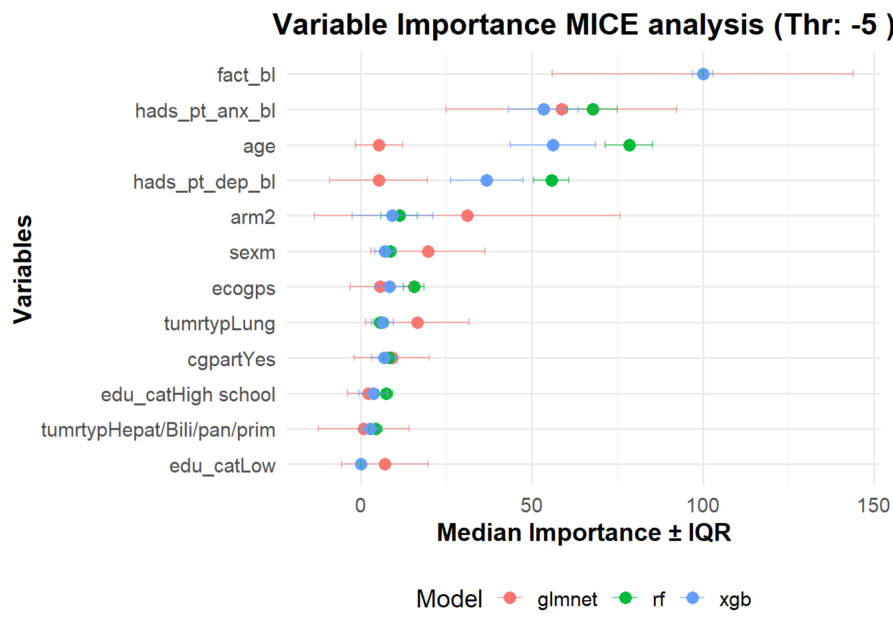

data_main_clean <- readRDS("Data_Preparation_&_Descriptive_output/data_main_clean_pred.rds")# Remove rows with missing values in specific variables
data_main_clean <- data_main_clean[!is.na(data_main_clean$edu_cat) &
!is.na(data_main_clean$race_cat) &
!is.na(data_main_clean$marital_cat), ]
#glimpse(data_main_clean)Setup & paramètres
library(dplyr); library(ggplot2); library(caret); library(glmnet)##
## Attaching package: 'dplyr'## The following objects are masked from 'package:stats':
##
## filter, lag## The following objects are masked from 'package:base':
##
## intersect, setdiff, setequal, union## Loading required package: lattice## Loading required package: Matrix## Loaded glmnet 4.1-9library(ranger); library(xgboost); library(pROC); library(tidyr); library(flextable)##
## Attaching package: 'xgboost'## The following object is masked from 'package:dplyr':
##
## slice## Type 'citation("pROC")' for a citation.##
## Attaching package: 'pROC'## The following objects are masked from 'package:stats':
##
## cov, smooth, var##
## Attaching package: 'tidyr'## The following objects are masked from 'package:Matrix':
##
## expand, pack, unpacklibrary(xtable); library(doParallel)##
## Attaching package: 'xtable'## The following object is masked from 'package:flextable':
##
## align## Loading required package: foreach## Loading required package: iterators## Loading required package: paralleloutdir <- "outputs_prediction_IPCW"
dir.create(outdir, showWarnings = FALSE)
set.seed(123)
n_splits <- 20 # nombre de splits 80/20 (génère distribution des metrics)
ncores <- parallel::detectCores() - 1
registerDoParallel(cores = ncores)
thresholds <- c(0, -5, -7, -10)
models_to_run <- c("glmnet","rf","xgb")IPCW : estimation, stabilisation, troncatures & diagnostics (plus comparaison de troncatures)
# Estimation des poids IPCW et diagnostics (plus test de plusieurs troncatures)
df_w24 <- data_main_clean %>%
dplyr::select(patref, state_t24, fact_chg24, everything())
df_w24 <- df_w24 %>% mutate(R24 = ifelse(!is.na(fact_chg24), 1, 0))
# Modèle baseline pour p_obs (documenter la formule)
modR_glm <- glm(R24 ~ age + ecogps + fact_bl + n12 + sex + tumrtyp,
data = df_w24, family = binomial)
df_w24$p_obs_glm <- predict(modR_glm, type = "response")
# Poids stabilisés (initial)
df_w24 <- df_w24 %>%
mutate(weight_ipcw = ifelse(R24 == 1, 1 / p_obs_glm, NA))
mean_pobs_obs <- mean(df_w24$p_obs_glm[df_w24$R24 == 1], na.rm = TRUE)
df_w24 <- df_w24 %>%
mutate(weight_ipcw = ifelse(R24==1, weight_ipcw * mean_pobs_obs, NA))
# Fonction trimming / troncature paramétrable (percentiles)
trim_weights <- function(w, low = 0.01, high = 0.99) {
ql <- quantile(w, probs = low, na.rm = TRUE)
qh <- quantile(w, probs = high, na.rm = TRUE)
w_t <- pmin(pmax(w, ql), qh)
return(w_t)
}
# Tester plusieurs troncatures et calculer ESS pour chacune
trunc_options <- list(c(0.01,0.99), c(0.05,0.95), c(0.10,0.90))
trunc_res <- list()
for (t in trunc_options) {
w_t <- df_w24$weight_ipcw
w_t[!is.na(w_t)] <- trim_weights(w_t[!is.na(w_t)], low = t[1], high = t[2])
ess <- (sum(w_t, na.rm=TRUE)^2) / sum((w_t^2), na.rm = TRUE)
trunc_res[[paste0("p",t[1]*100,"_",t[2]*100)]] <- list(trunc = t, ess = ess,
summary = summary(w_t),
quantiles = quantile(w_t, probs = seq(0,1,0.05), na.rm=TRUE))
# save histogram
png(file.path(outdir, paste0("weights_hist_p",t[1]*100,"_",t[2]*100,".png")), width=700, height=500)
hist(w_t[!is.na(w_t)], breaks=40, main=paste0("Weights histogram (", t[1]," - ", t[2],")"),
xlab="Truncated IPCW", col="steelblue")
dev.off()
}
# Choose a default truncation to use downstream (document choice)
# ici on choisit 1-99% (conservateur), tu peux changer après revue des histogrammes
df_w24$weight_ipcw_trunc <- NA
df_w24$weight_ipcw_trunc[df_w24$R24==1] <-
trim_weights(df_w24$weight_ipcw[df_w24$R24==1], low=0.01, high=0.99)
# ESS final & summary
ess_final <- (sum(df_w24$weight_ipcw_trunc, na.rm=TRUE)^2) / sum(df_w24$weight_ipcw_trunc^2, na.rm=TRUE)
cat("ESS after truncation (1-99%):", round(ess_final,1), "\n")## ESS after truncation (1-99%): 126.9write.csv(do.call(rbind, lapply(trunc_res, function(x) {
data.frame(ess = x$ess)
})), file.path(outdir,"truncation_ess_summary.csv"), row.names = TRUE)
# Save model summary for modR_glm
capture.output(summary(modR_glm), file = file.path(outdir,"modR_glm_summary.txt"))# ===============================
# Diagnostics ESS + résumé par troncature (avec NA)
# ===============================
compute_diagnostics_df <- function(weights, lower, upper) {
# Compter NA
n_na <- sum(is.na(weights))
# Appliquer troncature
qlow <- quantile(weights, lower, na.rm=TRUE)
qhigh <- quantile(weights, upper, na.rm=TRUE)
w_trunc <- pmin(pmax(weights, qlow), qhigh)
# ESS
ess <- (sum(w_trunc, na.rm=TRUE))^2 / sum(w_trunc^2, na.rm=TRUE)
# Résumés
summ <- as.numeric(summary(w_trunc))
data.frame(
Truncation = paste0(lower*100,"-",upper*100,"%"),
ESS = round(ess,1),
Min = round(summ[1],3),
Q1 = round(summ[2],3),
Median = round(summ[3],3),
Mean = round(summ[4],3),
Q3 = round(summ[5],3),
Max = round(summ[6],3),
N_NA = n_na
)
}
# Tester plusieurs bornes
diag_table <- dplyr::bind_rows(
compute_diagnostics_df(df_w24$weight_ipcw, 0.01, 0.99),
compute_diagnostics_df(df_w24$weight_ipcw, 0.05, 0.95),
compute_diagnostics_df(df_w24$weight_ipcw, 0.10, 0.90)
)
library(knitr)
library(kableExtra)## Warning: package 'kableExtra' was built under R version 4.4.3##
## Attaching package: 'kableExtra'## The following objects are masked from 'package:flextable':
##
## as_image, footnote## The following object is masked from 'package:dplyr':
##
## group_rowsdiag_table %>%
kbl(caption = "Diagnostics of IPCW weights under different truncation bounds") %>%
kable_classic(full_width = FALSE, html_font = "Times New Roman") %>%
column_spec(1, bold = TRUE) %>%
column_spec(2:8, width = "6em") %>%
column_spec(9, color = "red", bold = TRUE)| Truncation | ESS | Min | Q1 | Median | Mean | Q3 | Max | N_NA |
|---|---|---|---|---|---|---|---|---|
| 1-99% | 126.9 | 0.690 | 0.866 | 1.011 | 1.064 | 1.143 | 2.190 | 182 |
| 5-95% | 129.2 | 0.717 | 0.866 | 1.011 | 1.051 | 1.143 | 1.718 | 182 |
| 10-90% | 131.6 | 0.773 | 0.866 | 1.011 | 1.036 | 1.143 | 1.466 | 182 |
# Sauvegarde CSV pour rapport
write.csv(diag_table, "IPCW_diagnostics_summary.csv", row.names=FALSE)Bloc C — Repeated random splits (80/20)
# =====================================================
# BLOC C : repeated 80/20 splits -> fold-by-fold metrics
# + ajout CI 95% des AUC et comparaisons DeLong / Bootstrap ΔAUC
# =====================================================
recompute_weights_on_train <- TRUE
results_rows <- list()
all_importances <- list()
for (thr in thresholds) {
cat("=== Threshold", thr, "===\n")
df_thr0 <- df_w24 %>%
mutate(fact_chg24_bin = ifelse(!is.na(fact_chg24) & fact_chg24 <= thr, 1,
ifelse(!is.na(fact_chg24), 0, NA))) %>%
filter(!is.na(fact_chg24_bin))
if(sum(df_thr0$fact_chg24_bin==1, na.rm=TRUE) < 5) {
cat("Too few events for threshold", thr, "- skipping\n")
next
}
predictors_w24 <- c("age", "sex", "ecogps", "fact_bl", "tumrtyp", "arm", "cgpart",
"hads_pt_anx_bl","hads_pt_dep_bl", "edu_cat")
predictors_w24 <- predictors_w24[predictors_w24 %in% colnames(df_thr0)]
for (s in 1:n_splits) {
set.seed(1000 + s + as.integer(thr*10))
idx <- createDataPartition(df_thr0$fact_chg24_bin, p = 0.8, list = FALSE)
train_df <- df_thr0[idx, ]
test_df <- df_thr0[-idx, ]
if(recompute_weights_on_train) {
modR_train <- glm(R24 ~ age + ecogps + fact_bl + n12 + sex + tumrtyp,
data = data.frame(train_df), family = binomial)
p_obs_train <- predict(modR_train, type="response", newdata = train_df)
train_df$w <- ifelse(train_df$R24==1, (1/p_obs_train) * mean(p_obs_train, na.rm=TRUE), NA)
p_obs_test <- predict(modR_train, type="response", newdata=test_df)
test_df$w <- ifelse(test_df$R24==1, (1/p_obs_test) * mean(p_obs_train, na.rm=TRUE), NA)
qlow <- quantile(c(train_df$w, test_df$w), 0.10, na.rm = TRUE)
qhigh <- quantile(c(train_df$w, test_df$w), 0.90, na.rm = TRUE)
train_df$w[!is.na(train_df$w)] <- pmin(pmax(train_df$w[!is.na(train_df$w)], qlow), qhigh)
test_df$w[!is.na(test_df$w)] <- pmin(pmax(test_df$w[!is.na(test_df$w)], qlow), qhigh)
} else {
train_df$w <- train_df$weight_ipcw_trunc
test_df$w <- test_df$weight_ipcw_trunc
}
model_train <- train_df %>% select(all_of(c("fact_chg24_bin", predictors_w24, "w")))
model_test <- test_df %>% select(all_of(c("fact_chg24_bin", predictors_w24, "w")))
model_train$fact_chg24_bin <- factor(model_train$fact_chg24_bin, levels = c(0,1), labels = c("no","yes"))
model_test$fact_chg24_bin <- factor(model_test$fact_chg24_bin, levels = c(0,1), labels = c("no","yes"))
ctrl <- trainControl(method = "cv", number = 5, classProbs = TRUE,
summaryFunction = twoClassSummary, savePredictions = "final", allowParallel = TRUE)
grid_glmnet <- expand.grid(alpha = 1, lambda = 10^seq(-4, 0, length = 20))
fit_glmnet <- tryCatch(
train(fact_chg24_bin ~ ., data = model_train %>% select(-w),
method = "glmnet", metric = "ROC", trControl = ctrl,
preProcess = c("center","scale"), tuneGrid = grid_glmnet,
weights = model_train$w),
error = function(e) { message("glmnet error: ", e); NULL }
)
fit_rf <- tryCatch(
train(fact_chg24_bin ~ ., data = model_train %>% select(-w),
method = "ranger", metric = "ROC", trControl = ctrl,
tuneLength = 5, importance = "impurity", weights = model_train$w),
error = function(e) { message("rf error: ", e); NULL }
)
fit_xgb <- tryCatch(
train(fact_chg24_bin ~ ., data = model_train %>% select(-w),
method = "xgbTree", metric = "ROC", trControl = ctrl,
tuneLength = 4, weights = model_train$w),
error = function(e) { message("xgb error: ", e); NULL }
)
model_list <- list(glmnet = fit_glmnet, rf = fit_rf, xgb = fit_xgb)
for (mname in names(model_list)) {
fit <- model_list[[mname]]
if(is.null(fit)) {
results_rows[[length(results_rows)+1]] <- data.frame(
Threshold = thr, Split = s, Model = mname,
AUC = NA, AUC_low = NA, AUC_high = NA,
Brier = NA, Slope = NA,
Events = sum(model_test$fact_chg24_bin=="yes"),
n_test = nrow(model_test)
)
next
}
pred_prob <- predict(fit, newdata = model_test %>% select(-w), type = "prob")[,"yes"]
y_test <- ifelse(model_test$fact_chg24_bin == "yes", 1, 0)
w_test <- model_test$w
# ROC + CI95%
roc_obj <- tryCatch(roc(model_test$fact_chg24_bin, pred_prob, weights = w_test), error = function(e) NULL)
if(!is.null(roc_obj)){
auc_val <- auc(roc_obj)
ci_obj <- ci.auc(roc_obj, conf.level=0.95)
auc_low <- ci_obj[1]
auc_high <- ci_obj[3]
} else {
auc_val <- NA; auc_low <- NA; auc_high <- NA
}
# Brier
brier_val <- if(!all(is.na(pred_prob))) weighted.mean((pred_prob - y_test)^2, w = w_test, na.rm = TRUE) else NA
# Calibration slope
eps <- 1e-6
lp <- qlogis(pmin(pmax(pred_prob, eps), 1-eps))
calib_mod <- tryCatch(glm(y_test ~ lp, family = binomial, weights = w_test), error = function(e) NULL)
slope_val <- if(!is.null(calib_mod)) coef(calib_mod)[2] else NA
# Importance
varimp_df <- NULL
if(mname == "glmnet" && !is.null(fit)) {
lambda_best <- fit$bestTune$lambda
coefs <- as.matrix(coef(fit$finalModel, s = lambda_best))
varimp_df <- data.frame(Variable = rownames(coefs),
Coefficient = as.numeric(coefs)) %>%
dplyr::filter(Variable != "(Intercept)" & Coefficient != 0)
} else if(mname %in% c("rf","xgb") && !is.null(fit)) {
varimp_df <- varImp(fit)$importance %>%
tibble::rownames_to_column("Variable") %>%
rename(Importance = Overall)
}
all_importances[[paste0("thr",thr,"_split",s,"_",mname)]] <- varimp_df
results_rows[[length(results_rows)+1]] <- data.frame(
Threshold = thr, Split = s, Model = mname,
AUC = as.numeric(auc_val),
AUC_low = as.numeric(auc_low),
AUC_high = as.numeric(auc_high),
Brier = as.numeric(brier_val),
Slope = as.numeric(slope_val),
Events = sum(model_test$fact_chg24_bin=="yes"),
n_test = nrow(model_test)
)
}
}
}## === Threshold 0 ===## Warning: glm.fit: algorithm did not converge## Setting levels: control = no, case = yes## Setting direction: controls < cases## Setting levels: control = no, case = yes## Setting direction: controls < cases## Setting levels: control = no, case = yes## Setting direction: controls < cases## Warning: glm.fit: algorithm did not converge## Setting levels: control = no, case = yes
## Setting direction: controls < cases## Setting levels: control = no, case = yes## Setting direction: controls < cases## Setting levels: control = no, case = yes## Setting direction: controls < cases## Warning: glm.fit: algorithm did not converge## Setting levels: control = no, case = yes
## Setting direction: controls < cases## Setting levels: control = no, case = yes## Setting direction: controls < cases## Setting levels: control = no, case = yes## Setting direction: controls < cases## Warning: glm.fit: algorithm did not converge## Setting levels: control = no, case = yes## Setting direction: controls > cases## Setting levels: control = no, case = yes## Setting direction: controls < cases## Setting levels: control = no, case = yes## Setting direction: controls > cases## Warning: glm.fit: algorithm did not converge## Setting levels: control = no, case = yes## Setting direction: controls < cases## Setting levels: control = no, case = yes## Setting direction: controls < cases## Setting levels: control = no, case = yes## Setting direction: controls < cases## Warning: glm.fit: algorithm did not converge## Setting levels: control = no, case = yes## Setting direction: controls > cases## Setting levels: control = no, case = yes## Setting direction: controls > cases## Setting levels: control = no, case = yes## Setting direction: controls > cases## Warning: glm.fit: algorithm did not converge## Setting levels: control = no, case = yes## Setting direction: controls < cases## Setting levels: control = no, case = yes## Setting direction: controls > cases## Setting levels: control = no, case = yes## Setting direction: controls > cases## Warning: glm.fit: algorithm did not converge## Setting levels: control = no, case = yes## Setting direction: controls < cases## Setting levels: control = no, case = yes## Setting direction: controls < cases## Setting levels: control = no, case = yes## Setting direction: controls < cases## Warning: glm.fit: algorithm did not converge## Setting levels: control = no, case = yes## Setting direction: controls > cases## Setting levels: control = no, case = yes## Setting direction: controls < cases## Setting levels: control = no, case = yes## Setting direction: controls < cases## Warning: glm.fit: algorithm did not converge## Setting levels: control = no, case = yes
## Setting direction: controls < cases## Setting levels: control = no, case = yes## Setting direction: controls < cases## Setting levels: control = no, case = yes## Setting direction: controls < cases## Warning: glm.fit: algorithm did not converge## Setting levels: control = no, case = yes
## Setting direction: controls < cases## Setting levels: control = no, case = yes## Setting direction: controls < cases## Setting levels: control = no, case = yes## Setting direction: controls < cases## Warning: glm.fit: algorithm did not converge## Setting levels: control = no, case = yes
## Setting direction: controls < cases## Setting levels: control = no, case = yes## Setting direction: controls < cases## Setting levels: control = no, case = yes## Setting direction: controls < cases## Warning: glm.fit: algorithm did not converge## Setting levels: control = no, case = yes
## Setting direction: controls < cases## Setting levels: control = no, case = yes## Setting direction: controls > cases## Setting levels: control = no, case = yes## Setting direction: controls < cases## Warning: glm.fit: algorithm did not converge## Setting levels: control = no, case = yes
## Setting direction: controls < cases## Setting levels: control = no, case = yes## Setting direction: controls < cases## Setting levels: control = no, case = yes## Setting direction: controls < cases## Warning: glm.fit: algorithm did not converge## Setting levels: control = no, case = yes
## Setting direction: controls < cases## Setting levels: control = no, case = yes## Setting direction: controls < cases## Setting levels: control = no, case = yes## Setting direction: controls < cases## Warning: glm.fit: algorithm did not converge## Setting levels: control = no, case = yes## Setting direction: controls > cases## Setting levels: control = no, case = yes## Setting direction: controls < cases## Setting levels: control = no, case = yes## Setting direction: controls > cases## Warning: glm.fit: algorithm did not converge## Setting levels: control = no, case = yes## Setting direction: controls < cases## Setting levels: control = no, case = yes## Setting direction: controls > cases## Setting levels: control = no, case = yes## Setting direction: controls < cases## Warning: glm.fit: algorithm did not converge## Setting levels: control = no, case = yes
## Setting direction: controls < cases## Setting levels: control = no, case = yes## Setting direction: controls > cases## Setting levels: control = no, case = yes## Setting direction: controls < cases## Warning: glm.fit: algorithm did not converge## Setting levels: control = no, case = yes
## Setting direction: controls < cases## Setting levels: control = no, case = yes## Setting direction: controls < cases## Setting levels: control = no, case = yes## Setting direction: controls < cases## Warning: glm.fit: algorithm did not converge## Setting levels: control = no, case = yes
## Setting direction: controls < cases## Setting levels: control = no, case = yes## Setting direction: controls < cases## Setting levels: control = no, case = yes## Setting direction: controls < cases## === Threshold -5 ===## Warning: glm.fit: algorithm did not converge## Setting levels: control = no, case = yes
## Setting direction: controls < cases## Setting levels: control = no, case = yes## Setting direction: controls > cases## Setting levels: control = no, case = yes## Setting direction: controls > cases## Warning: glm.fit: algorithm did not converge## Setting levels: control = no, case = yes## Setting direction: controls < cases## Setting levels: control = no, case = yes## Setting direction: controls < cases## Setting levels: control = no, case = yes## Setting direction: controls < cases## Warning: glm.fit: algorithm did not converge## Setting levels: control = no, case = yes
## Setting direction: controls < cases## Setting levels: control = no, case = yes## Setting direction: controls < cases## Setting levels: control = no, case = yes## Setting direction: controls < cases## Warning: glm.fit: algorithm did not converge## Setting levels: control = no, case = yes
## Setting direction: controls < cases## Setting levels: control = no, case = yes## Setting direction: controls > cases## Setting levels: control = no, case = yes## Setting direction: controls < cases## Warning: glm.fit: algorithm did not converge## Setting levels: control = no, case = yes
## Setting direction: controls < cases## Setting levels: control = no, case = yes## Setting direction: controls < cases## Setting levels: control = no, case = yes## Setting direction: controls < cases## Warning: glm.fit: algorithm did not converge## Setting levels: control = no, case = yes
## Setting direction: controls < cases## Setting levels: control = no, case = yes## Setting direction: controls > cases## Setting levels: control = no, case = yes## Setting direction: controls < cases## Warning: glm.fit: algorithm did not converge## Setting levels: control = no, case = yes
## Setting direction: controls < cases## Setting levels: control = no, case = yes## Setting direction: controls < cases## Setting levels: control = no, case = yes## Setting direction: controls < cases## Warning: glm.fit: algorithm did not converge## Setting levels: control = no, case = yes
## Setting direction: controls < cases## Setting levels: control = no, case = yes## Setting direction: controls < cases## Setting levels: control = no, case = yes## Setting direction: controls < cases## Warning: glm.fit: algorithm did not converge## Setting levels: control = no, case = yes
## Setting direction: controls < cases## Setting levels: control = no, case = yes## Setting direction: controls < cases## Setting levels: control = no, case = yes## Setting direction: controls < cases## Warning: glm.fit: algorithm did not converge## Setting levels: control = no, case = yes
## Setting direction: controls < cases## Setting levels: control = no, case = yes## Setting direction: controls > cases## Setting levels: control = no, case = yes## Setting direction: controls < cases## Warning: glm.fit: algorithm did not converge## Setting levels: control = no, case = yes
## Setting direction: controls < cases## Setting levels: control = no, case = yes## Setting direction: controls < cases## Setting levels: control = no, case = yes## Setting direction: controls < cases## Warning: glm.fit: algorithm did not converge## Setting levels: control = no, case = yes
## Setting direction: controls < cases## Setting levels: control = no, case = yes## Setting direction: controls < cases## Setting levels: control = no, case = yes## Setting direction: controls < cases## Warning: glm.fit: algorithm did not converge## Setting levels: control = no, case = yes## Setting direction: controls > cases## Setting levels: control = no, case = yes## Setting direction: controls < cases## Setting levels: control = no, case = yes## Setting direction: controls < cases## Warning: glm.fit: algorithm did not converge## Setting levels: control = no, case = yes
## Setting direction: controls < cases## Setting levels: control = no, case = yes## Setting direction: controls < cases## Setting levels: control = no, case = yes## Setting direction: controls < cases## Warning: glm.fit: algorithm did not converge## Setting levels: control = no, case = yes
## Setting direction: controls < cases## Setting levels: control = no, case = yes## Setting direction: controls > cases## Setting levels: control = no, case = yes## Setting direction: controls > cases## Warning: glm.fit: algorithm did not converge## Setting levels: control = no, case = yes## Setting direction: controls < cases## Setting levels: control = no, case = yes## Setting direction: controls > cases## Setting levels: control = no, case = yes## Setting direction: controls > cases## Warning: glm.fit: algorithm did not converge## Setting levels: control = no, case = yes## Setting direction: controls < cases## Setting levels: control = no, case = yes## Setting direction: controls > cases## Setting levels: control = no, case = yes## Setting direction: controls < cases## Warning: glm.fit: algorithm did not converge## Setting levels: control = no, case = yes
## Setting direction: controls < cases## Setting levels: control = no, case = yes## Setting direction: controls < cases## Setting levels: control = no, case = yes## Setting direction: controls < cases## Warning: glm.fit: algorithm did not converge## Setting levels: control = no, case = yes## Setting direction: controls > cases## Setting levels: control = no, case = yes## Setting direction: controls > cases## Setting levels: control = no, case = yes## Setting direction: controls < cases## Warning: glm.fit: algorithm did not converge## Setting levels: control = no, case = yes
## Setting direction: controls < cases## Setting levels: control = no, case = yes## Setting direction: controls < cases## Setting levels: control = no, case = yes## Setting direction: controls < cases## === Threshold -7 ===## Warning: glm.fit: algorithm did not converge## Setting levels: control = no, case = yes
## Setting direction: controls < cases## Setting levels: control = no, case = yes## Setting direction: controls < cases## Setting levels: control = no, case = yes## Setting direction: controls < cases## Warning: glm.fit: algorithm did not converge## Setting levels: control = no, case = yes
## Setting direction: controls < cases## Setting levels: control = no, case = yes## Setting direction: controls < cases## Setting levels: control = no, case = yes## Setting direction: controls < cases## Warning: glm.fit: algorithm did not converge## Setting levels: control = no, case = yes
## Setting direction: controls < cases## Setting levels: control = no, case = yes## Setting direction: controls < cases## Setting levels: control = no, case = yes## Setting direction: controls > cases## Warning: glm.fit: algorithm did not converge## Setting levels: control = no, case = yes## Setting direction: controls < cases## Setting levels: control = no, case = yes## Setting direction: controls < cases## Setting levels: control = no, case = yes## Setting direction: controls < cases## Warning: glm.fit: algorithm did not converge## Setting levels: control = no, case = yes
## Setting direction: controls < cases## Setting levels: control = no, case = yes## Setting direction: controls > cases## Setting levels: control = no, case = yes## Setting direction: controls > cases## Warning: glm.fit: algorithm did not converge## Setting levels: control = no, case = yes## Setting direction: controls < cases## Setting levels: control = no, case = yes## Setting direction: controls < cases## Setting levels: control = no, case = yes## Setting direction: controls < cases## Warning: glm.fit: algorithm did not converge## Setting levels: control = no, case = yes
## Setting direction: controls < cases## Setting levels: control = no, case = yes## Setting direction: controls < cases## Setting levels: control = no, case = yes## Setting direction: controls > cases## Warning: glm.fit: algorithm did not converge## Setting levels: control = no, case = yes## Setting direction: controls < cases## Setting levels: control = no, case = yes## Setting direction: controls < cases## Setting levels: control = no, case = yes## Setting direction: controls < cases## Warning: glm.fit: algorithm did not converge## Setting levels: control = no, case = yes
## Setting direction: controls < cases## Setting levels: control = no, case = yes## Setting direction: controls < cases## Setting levels: control = no, case = yes## Setting direction: controls < cases## Warning: glm.fit: algorithm did not converge## Setting levels: control = no, case = yes
## Setting direction: controls < cases## Setting levels: control = no, case = yes## Setting direction: controls < cases## Setting levels: control = no, case = yes## Setting direction: controls < cases## Warning: glm.fit: algorithm did not converge## Setting levels: control = no, case = yes
## Setting direction: controls < cases## Setting levels: control = no, case = yes## Setting direction: controls > cases## Setting levels: control = no, case = yes## Setting direction: controls > cases## Warning: glm.fit: algorithm did not converge## Setting levels: control = no, case = yes
## Setting direction: controls > cases## Setting levels: control = no, case = yes## Setting direction: controls < cases## Setting levels: control = no, case = yes## Setting direction: controls < cases## Warning: glm.fit: algorithm did not converge## Setting levels: control = no, case = yes
## Setting direction: controls < cases## Setting levels: control = no, case = yes## Setting direction: controls > cases## Setting levels: control = no, case = yes## Setting direction: controls < cases## Warning: glm.fit: algorithm did not converge## Setting levels: control = no, case = yes
## Setting direction: controls < cases## Setting levels: control = no, case = yes## Setting direction: controls < cases## Setting levels: control = no, case = yes## Setting direction: controls < cases## Warning: glm.fit: algorithm did not converge## Setting levels: control = no, case = yes
## Setting direction: controls < cases## Setting levels: control = no, case = yes## Setting direction: controls > cases## Setting levels: control = no, case = yes## Setting direction: controls < cases## Warning: glm.fit: algorithm did not converge## Setting levels: control = no, case = yes
## Setting direction: controls < cases## Setting levels: control = no, case = yes## Setting direction: controls < cases## Setting levels: control = no, case = yes## Setting direction: controls < cases## Warning: glm.fit: algorithm did not converge## Setting levels: control = no, case = yes## Setting direction: controls > cases## Setting levels: control = no, case = yes## Setting direction: controls > cases## Setting levels: control = no, case = yes## Setting direction: controls > cases## Warning: glm.fit: algorithm did not converge## Setting levels: control = no, case = yes
## Setting direction: controls > cases## Setting levels: control = no, case = yes## Setting direction: controls > cases## Setting levels: control = no, case = yes## Setting direction: controls < cases## Warning: glm.fit: algorithm did not converge## Setting levels: control = no, case = yes
## Setting direction: controls < cases## Setting levels: control = no, case = yes## Setting direction: controls < cases## Setting levels: control = no, case = yes## Setting direction: controls < cases## Warning: glm.fit: algorithm did not converge## Setting levels: control = no, case = yes
## Setting direction: controls < cases## Setting levels: control = no, case = yes## Setting direction: controls < cases## Setting levels: control = no, case = yes## Setting direction: controls < cases## === Threshold -10 ===## Warning: glm.fit: algorithm did not converge## Setting levels: control = no, case = yes
## Setting direction: controls < cases## Setting levels: control = no, case = yes## Setting direction: controls > cases## Setting levels: control = no, case = yes## Setting direction: controls > cases## Warning: glm.fit: algorithm did not converge## Setting levels: control = no, case = yes## Setting direction: controls < cases## Setting levels: control = no, case = yes## Setting direction: controls < cases## Setting levels: control = no, case = yes## Setting direction: controls < cases## Warning: glm.fit: algorithm did not converge## Setting levels: control = no, case = yes## Setting direction: controls > cases## Setting levels: control = no, case = yes## Setting direction: controls > cases## Setting levels: control = no, case = yes## Setting direction: controls > cases## Warning: glm.fit: algorithm did not converge## Setting levels: control = no, case = yes## Setting direction: controls < cases## Setting levels: control = no, case = yes## Setting direction: controls < cases## Setting levels: control = no, case = yes## Setting direction: controls < cases## Warning: glm.fit: algorithm did not converge## Setting levels: control = no, case = yes## Setting direction: controls > cases## Setting levels: control = no, case = yes## Setting direction: controls < cases## Setting levels: control = no, case = yes## Setting direction: controls < cases## Warning: glm.fit: algorithm did not converge## Setting levels: control = no, case = yes
## Setting direction: controls < cases## Setting levels: control = no, case = yes## Setting direction: controls > cases## Setting levels: control = no, case = yes## Setting direction: controls > cases## Warning: glm.fit: algorithm did not converge## Setting levels: control = no, case = yes
## Setting direction: controls > cases## Setting levels: control = no, case = yes## Setting direction: controls < cases## Setting levels: control = no, case = yes## Setting direction: controls < cases## Warning: glm.fit: algorithm did not converge## Setting levels: control = no, case = yes
## Setting direction: controls < cases## Setting levels: control = no, case = yes## Setting direction: controls < cases## Setting levels: control = no, case = yes## Setting direction: controls < cases## Warning: glm.fit: algorithm did not converge## Setting levels: control = no, case = yes
## Setting direction: controls < cases## Setting levels: control = no, case = yes## Setting direction: controls < cases## Setting levels: control = no, case = yes## Setting direction: controls < cases## Warning: glm.fit: algorithm did not converge## Setting levels: control = no, case = yes
## Setting direction: controls < cases## Setting levels: control = no, case = yes## Setting direction: controls < cases## Setting levels: control = no, case = yes## Setting direction: controls < cases## Warning: glm.fit: algorithm did not converge## Setting levels: control = no, case = yes
## Setting direction: controls < cases## Setting levels: control = no, case = yes## Setting direction: controls < cases## Setting levels: control = no, case = yes## Setting direction: controls < cases## Warning in ci.auc.roc(roc_obj, conf.level = 0.95): ci.auc() of a ROC curve with
## AUC == 1 is always 1-1 and can be misleading.
## Warning in ci.auc.roc(roc_obj, conf.level = 0.95): glm.fit: algorithm did not
## converge## Warning: glm.fit: fitted probabilities numerically 0 or 1 occurred## Warning: glm.fit: algorithm did not converge## Setting levels: control = no, case = yes
## Setting direction: controls < cases## Setting levels: control = no, case = yes## Setting direction: controls < cases## Warning in ci.auc.roc(roc_obj, conf.level = 0.95): ci.auc() of a ROC curve with
## AUC == 1 is always 1-1 and can be misleading.
## Warning in ci.auc.roc(roc_obj, conf.level = 0.95): glm.fit: algorithm did not
## converge## Warning: glm.fit: fitted probabilities numerically 0 or 1 occurred## Setting levels: control = no, case = yes
## Setting direction: controls < cases## Warning: glm.fit: algorithm did not converge## Setting levels: control = no, case = yes
## Setting direction: controls < cases## Setting levels: control = no, case = yes## Setting direction: controls < cases## Setting levels: control = no, case = yes## Setting direction: controls < cases## Warning: glm.fit: algorithm did not converge## Setting levels: control = no, case = yes
## Setting direction: controls < cases## Setting levels: control = no, case = yes## Setting direction: controls > cases## Setting levels: control = no, case = yes## Setting direction: controls < cases## Warning: glm.fit: algorithm did not converge## Setting levels: control = no, case = yes
## Setting direction: controls < cases## Setting levels: control = no, case = yes## Setting direction: controls > cases## Setting levels: control = no, case = yes## Setting direction: controls > cases## Warning: glm.fit: algorithm did not converge## Setting levels: control = no, case = yes## Setting direction: controls < cases## Setting levels: control = no, case = yes## Setting direction: controls < cases## Setting levels: control = no, case = yes## Setting direction: controls < cases## Warning: glm.fit: algorithm did not converge## Setting levels: control = no, case = yes
## Setting direction: controls < cases## Setting levels: control = no, case = yes## Setting direction: controls > cases## Setting levels: control = no, case = yes## Setting direction: controls > cases## Warning: glm.fit: algorithm did not converge## Setting levels: control = no, case = yes## Setting direction: controls < cases## Setting levels: control = no, case = yes## Setting direction: controls < cases## Setting levels: control = no, case = yes## Setting direction: controls < cases## Warning: glm.fit: algorithm did not converge## Setting levels: control = no, case = yes
## Setting direction: controls < cases## Setting levels: control = no, case = yes## Setting direction: controls > cases## Setting levels: control = no, case = yes## Setting direction: controls > cases## Warning: glm.fit: algorithm did not converge## Setting levels: control = no, case = yes## Setting direction: controls < cases## Setting levels: control = no, case = yes## Setting direction: controls < cases## Setting levels: control = no, case = yes## Setting direction: controls < casesresults_df_splits <- bind_rows(results_rows)
write.csv(results_df_splits, file.path(outdir,"results_splits_fold_by_fold_CI.csv"), row.names = FALSE)
saveRDS(all_importances, file = file.path(outdir,"varimp_all_splits_CI.rds"))# BLOC D : résumé mediane / IQR + boxplots / heatmap
library(ggplot2); library(dplyr); library(tidyr)
res_summary <- results_df_splits %>%
group_by(Threshold, Model) %>%
summarise(
AUC_median = median(AUC, na.rm=TRUE),
AUC_IQR = IQR(AUC, na.rm=TRUE),
Brier_median = median(Brier, na.rm=TRUE),
Brier_IQR = IQR(Brier, na.rm=TRUE),
Slope_median = median(Slope, na.rm=TRUE),
Slope_IQR = IQR(Slope, na.rm=TRUE),
n_splits = n(),
median_events = median(Events, na.rm=TRUE),
.groups = "drop"
)
write.csv(res_summary, file.path(outdir,"summary_median_IQR_1.csv"), row.names = FALSE)
# Boxplots AUC
ggplot(results_df_splits, aes(x=factor(Threshold), y=AUC, fill=Model)) +
geom_boxplot() + labs(title="AUC by Threshold and Model (repeated splits)", x="Threshold", y="AUC") +
theme_minimal(base_size=13)ggsave(file.path(outdir,"AUC_boxplot_repeated_splits_1.png"), width=8, height=5)
# Boxplots Brier
ggplot(results_df_splits, aes(x=factor(Threshold), y=Brier, fill=Model)) +
geom_boxplot() + labs(title="Brier by Threshold and Model (repeated splits)", x="Threshold", y="Brier") +
theme_minimal(base_size=13)ggsave(file.path(outdir,"Brier_boxplot_repeated_splits_1.png"), width=8, height=5)
# Slopes boxplot with reference line
ggplot(results_df_splits, aes(x=factor(Threshold), y=Slope, fill=Model)) +
geom_boxplot() + geom_hline(yintercept=1, linetype="dashed", color="red") +
labs(title="Calibration slope by Threshold and Model (repeated splits)", x="Threshold", y="Slope") +
theme_minimal(base_size=13)## Warning: Removed 1 row containing non-finite outside the scale range
## (`stat_boxplot()`).ggsave(file.path(outdir,"Slope_boxplot_repeated_splits_1.png"), width=8, height=5)## Warning: Removed 1 row containing non-finite outside the scale range
## (`stat_boxplot()`).# Heatmap of medians
res_long <- res_summary %>%
pivot_longer(cols = c(AUC_median, Brier_median, Slope_median), names_to = "Metric", values_to = "Value")
ggplot(res_long, aes(x=factor(Threshold), y=Model, fill=Value)) +
geom_tile(color="white") +
facet_wrap(~Metric, scales="free") +
geom_text(aes(label = round(Value,2))) +
labs(title="Median performance by Threshold and Model", x="Threshold", y="Model") +
theme_minimal(base_size=12)ggsave(file.path(outdir,"Median_heatmap_1.png"), width=10, height=6)saveRDS(all_importances, file = file.path(outdir,"varimp_all_splits_1.rds"))all_importances <- readRDS(file.path(outdir,"varimp_all_splits_1.rds"))
# transformer la liste en un tableau harmonisé
varimp_df <- bind_rows(
lapply(names(all_importances), function(name) {
df <- all_importances[[name]]
if (is.null(df) || nrow(df) == 0) return(NULL)
df$Run <- name
# harmoniser les colonnes
if ("Coefficient" %in% names(df)) {
df <- df %>% rename(Importance = Coefficient)
}
df
})
)
# Séparer infos du nom
varimp_df <- varimp_df %>%
tidyr::separate(Run, into = c("thr", "split", "model"), sep = "_", remove = FALSE)
# Résumé
summary_varimp <- varimp_df %>%
group_by(thr, model, Variable) %>%
summarise(
MedianImportance = median(abs(Importance), na.rm = TRUE),
IQRImportance = IQR(abs(Importance), na.rm = TRUE),
.groups = "drop"
) %>%
arrange(thr, model, desc(MedianImportance))library(knitr)
library(kableExtra)
# tableau publication ready
summary_varimp %>%
mutate(
MedianImportance = round(MedianImportance, 3),
IQRImportance = round(IQRImportance, 3)
) %>%
arrange(thr, model, desc(MedianImportance)) %>%
kable(
format = "html", # mets "latex" si tu compiles en PDF
booktabs = TRUE,
caption = "Variable Importance Across Thresholds and Models",
col.names = c("Threshold", "Model", "Variable", "Median |Importance|", "IQR |Importance|")
) %>%
kable_styling(
bootstrap_options = c("striped", "hover", "condensed", "responsive"),
full_width = FALSE,
font_size = 12
) %>%
collapse_rows(columns = c(1, 2), valign = "top")| Threshold | Model | Variable | Median |Importance| | IQR |Importance| |
|---|---|---|---|---|
| thr-10 | glmnet | tumrtypHepatic/Biliary/Pancreatic/Unknown primary | 1.394 | 1.040 |
| tumrtypLung | 1.130 | 0.398 | ||
| fact_bl | 0.929 | 0.423 | ||
| hads_pt_anx_bl | 0.836 | 0.293 | ||
| ecogps | 0.403 | 0.310 | ||
| arm2 | 0.378 | 0.192 | ||
| edu_catLow | 0.328 | 0.226 | ||
| hads_pt_dep_bl | 0.276 | 0.338 | ||
| edu_catHigh school | 0.147 | 0.121 | ||
| sexm | 0.102 | 0.165 | ||
| age | 0.091 | 0.086 | ||
| cgpartYes | 0.052 | 0.180 | ||
| rf | fact_bl | 100.000 | 0.000 | |
| age | 77.946 | 14.493 | ||
| hads_pt_anx_bl | 73.662 | 9.286 | ||
| hads_pt_dep_bl | 47.665 | 23.843 | ||
| ecogps | 12.888 | 6.003 | ||
| sexm | 11.635 | 6.425 | ||
| arm2 | 11.027 | 7.368 | ||
| tumrtypHepatic/Biliary/Pancreatic/Unknown primary | 9.865 | 4.538 | ||
| cgpartYes | 8.455 | 5.205 | ||
| edu_catHigh school | 5.762 | 5.288 | ||
| tumrtypLung | 3.022 | 5.253 | ||
| edu_catLow | 0.000 | 0.000 | ||
| xgb | fact_bl | 100.000 | 9.637 | |
| age | 81.393 | 32.061 | ||
| hads_pt_anx_bl | 53.596 | 11.576 | ||
| hads_pt_dep_bl | 39.762 | 16.676 | ||
| arm2 | 15.643 | 7.338 | ||
| sexm | 15.243 | 13.103 | ||
| tumrtypHepatic/Biliary/Pancreatic/Unknown primary | 14.884 | 6.222 | ||
| ecogps | 9.020 | 5.910 | ||
| edu_catHigh school | 8.698 | 8.951 | ||
| tumrtypLung | 8.448 | 5.552 | ||
| cgpartYes | 3.550 | 3.660 | ||
| edu_catLow | 0.000 | 0.000 | ||
| thr-5 | glmnet | tumrtypHepatic/Biliary/Pancreatic/Unknown primary | 1.636 | 0.847 |
| tumrtypLung | 1.404 | 0.759 | ||
| hads_pt_anx_bl | 1.028 | 0.206 | ||
| fact_bl | 0.909 | 0.327 | ||
| edu_catLow | 0.465 | 0.230 | ||
| hads_pt_dep_bl | 0.434 | 0.249 | ||
| ecogps | 0.298 | 0.268 | ||
| sexm | 0.260 | 0.211 | ||
| arm2 | 0.258 | 0.133 | ||
| cgpartYes | 0.199 | 0.132 | ||
| age | 0.103 | 0.093 | ||
| edu_catHigh school | 0.065 | 0.133 | ||
| rf | fact_bl | 100.000 | 1.278 | |
| age | 83.614 | 23.016 | ||
| hads_pt_anx_bl | 78.780 | 13.422 | ||
| hads_pt_dep_bl | 59.808 | 32.107 | ||
| ecogps | 17.583 | 22.957 | ||
| sexm | 13.424 | 16.289 | ||
| cgpartYes | 13.261 | 16.003 | ||
| edu_catHigh school | 10.517 | 15.189 | ||
| arm2 | 9.285 | 18.868 | ||
| tumrtypHepatic/Biliary/Pancreatic/Unknown primary | 8.911 | 10.588 | ||
| tumrtypLung | 3.503 | 4.696 | ||
| edu_catLow | 0.000 | 0.000 | ||
| xgb | fact_bl | 99.472 | 13.508 | |
| age | 90.073 | 20.310 | ||
| hads_pt_anx_bl | 64.635 | 30.481 | ||
| hads_pt_dep_bl | 48.341 | 20.839 | ||
| tumrtypHepatic/Biliary/Pancreatic/Unknown primary | 14.445 | 9.866 | ||
| sexm | 13.512 | 16.387 | ||
| arm2 | 11.891 | 5.690 | ||
| ecogps | 11.594 | 9.747 | ||
| cgpartYes | 8.526 | 9.199 | ||
| edu_catHigh school | 8.432 | 12.714 | ||
| tumrtypLung | 2.205 | 8.968 | ||
| edu_catLow | 0.000 | 1.108 | ||
| thr-7 | glmnet | tumrtypHepatic/Biliary/Pancreatic/Unknown primary | 2.019 | 0.703 |
| tumrtypLung | 1.539 | 0.591 | ||
| fact_bl | 0.993 | 0.217 | ||
| hads_pt_anx_bl | 0.945 | 0.085 | ||
| ecogps | 0.586 | 0.210 | ||
| hads_pt_dep_bl | 0.440 | 0.244 | ||
| edu_catLow | 0.427 | 0.985 | ||
| arm2 | 0.180 | 0.163 | ||
| cgpartYes | 0.165 | 0.162 | ||
| edu_catHigh school | 0.154 | 0.104 | ||
| age | 0.137 | 0.079 | ||
| sexm | 0.099 | 0.082 | ||
| rf | fact_bl | 100.000 | 2.460 | |
| age | 91.909 | 16.491 | ||
| hads_pt_anx_bl | 80.051 | 18.771 | ||
| hads_pt_dep_bl | 60.784 | 20.893 | ||
| ecogps | 24.022 | 11.965 | ||
| cgpartYes | 13.713 | 10.797 | ||
| tumrtypHepatic/Biliary/Pancreatic/Unknown primary | 13.313 | 10.698 | ||
| sexm | 12.101 | 13.779 | ||
| arm2 | 10.264 | 16.543 | ||
| edu_catHigh school | 5.882 | 11.582 | ||
| tumrtypLung | 4.930 | 4.877 | ||
| edu_catLow | 0.000 | 0.000 | ||
| xgb | age | 100.000 | 12.111 | |
| fact_bl | 83.335 | 37.535 | ||
| hads_pt_dep_bl | 43.823 | 22.552 | ||
| hads_pt_anx_bl | 43.107 | 15.181 | ||
| tumrtypHepatic/Biliary/Pancreatic/Unknown primary | 17.948 | 10.859 | ||
| ecogps | 12.855 | 9.156 | ||
| sexm | 9.517 | 13.320 | ||
| cgpartYes | 8.433 | 5.504 | ||
| arm2 | 7.647 | 4.952 | ||
| tumrtypLung | 5.544 | 6.554 | ||
| edu_catHigh school | 5.097 | 9.234 | ||
| edu_catLow | 0.000 | 0.050 | ||
| thr0 | glmnet | hads_pt_anx_bl | 0.668 | 0.465 |
| fact_bl | 0.625 | 0.524 | ||
| edu_catHigh school | 0.261 | 0.156 | ||
| tumrtypLung | 0.235 | 0.173 | ||
| arm2 | 0.232 | 0.207 | ||
| hads_pt_dep_bl | 0.165 | 0.134 | ||
| edu_catLow | 0.127 | 0.155 | ||
| sexm | 0.104 | 0.119 | ||
| cgpartYes | 0.090 | 0.031 | ||
| age | 0.087 | 0.031 | ||
| ecogps | 0.080 | 0.064 | ||
| tumrtypHepatic/Biliary/Pancreatic/Unknown primary | 0.069 | 0.057 | ||
| rf | fact_bl | 100.000 | 0.000 | |
| age | 64.921 | 13.423 | ||
| hads_pt_dep_bl | 57.737 | 17.404 | ||
| hads_pt_anx_bl | 57.273 | 8.574 | ||
| ecogps | 12.209 | 9.657 | ||
| arm2 | 8.247 | 4.473 | ||
| sexm | 7.507 | 4.593 | ||
| edu_catHigh school | 6.579 | 3.319 | ||
| tumrtypLung | 6.022 | 2.627 | ||
| cgpartYes | 3.344 | 3.209 | ||
| tumrtypHepatic/Biliary/Pancreatic/Unknown primary | 2.439 | 2.019 | ||
| edu_catLow | 0.000 | 0.000 | ||
| xgb | fact_bl | 100.000 | 0.000 | |
| age | 68.613 | 24.832 | ||
| hads_pt_dep_bl | 56.799 | 14.638 | ||
| hads_pt_anx_bl | 50.070 | 15.224 | ||
| sexm | 13.677 | 7.457 | ||
| edu_catHigh school | 13.276 | 4.670 | ||
| arm2 | 11.002 | 6.901 | ||
| ecogps | 10.730 | 7.688 | ||
| tumrtypLung | 8.703 | 11.484 | ||
| tumrtypHepatic/Biliary/Pancreatic/Unknown primary | 7.085 | 7.739 | ||
| cgpartYes | 4.506 | 3.977 | ||
| edu_catLow | 0.000 | 2.344 |
library(ggplot2)
library(dplyr)
# Renommer la variable trop longue
summary_varimp <- summary_varimp %>%
mutate(Variable = ifelse(Variable == "tumrtypHepatic/Biliary/Pancreatic/Unknown primary",
"tumrtypHepat/Bili/pan/prim",
Variable))
# Créer les plots pour chaque seuil (thr)
plots <- lapply(unique(summary_varimp$thr), function(threshold) {
df_thr <- filter(summary_varimp, thr == threshold)
ggplot(df_thr, aes(x = MedianImportance,
y = reorder(Variable, MedianImportance),
color = model)) +
geom_point(size = 3) +
geom_errorbarh(aes(xmin = MedianImportance - IQRImportance/2,
xmax = MedianImportance + IQRImportance/2),
height = 0.2, alpha = 0.6) +
labs(
title = paste("Variable Importance IPCW analysis (Thr:", threshold, ")"),
x = "Median Importance (± IQR)",
y = "Variables",
color = "Model"
) +
theme_minimal(base_size = 14) +
theme(
plot.title = element_text(hjust = 0.5, face = "bold"),
axis.title.x = element_text(face = "bold"),
axis.title.y = element_text(face = "bold"),
legend.position = "bottom"
)
})
# afficher les 4 premiers plots
plots[[1]]plots[[2]]plots[[3]]plots[[4]]Bloc E: MICE et prediction
# ===============================
# Imputation multiple avec méthodes adaptées
# ===============================
library(mice)## Warning: package 'mice' was built under R version 4.4.3##
## Attaching package: 'mice'## The following object is masked from 'package:stats':
##
## filter## The following objects are masked from 'package:base':
##
## cbind, rbindlibrary(dplyr)
set.seed(123)
# ⚠️ Retirer identifiants avant imputation
df_imp <- data_main_clean %>%
dplyr::select(-patref) # enlève l'identifiant
# Vérifier les types
str(df_imp)## 'data.frame': 319 obs. of 38 variables:
## $ wk12_dead : Factor w/ 2 levels "0","1": 2 1 1 1 1 1 1 2 1 1 ...
## $ wk24_dead : Factor w/ 2 levels "0","1": 2 1 1 1 2 1 2 2 1 1 ...
## $ fact_chg12 : num NA NA -13 8 NA ...
## $ fact_chg24 : num NA NA NA 3.67 NA ...
## $ hads_anx_chg12 : int NA NA -1 0 NA NA 2 NA -1 5 ...
## $ hads_dep_chg12 : int NA NA -3 2 NA NA 1 NA 4 8 ...
## $ n12 : int 6 1 0 3 2 0 4 3 2 0 ...
## $ n12_grp : Factor w/ 5 levels "0 visits","1-2 visits",..: 4 2 1 3 2 1 3 3 2 1 ...
## $ fact_bl : num 90 97.3 81 90 73.2 ...
## $ hads_pt_anx_bl : int 7 0 8 5 5 16 8 6 13 1 ...
## $ hads_pt_dep_bl : int 0 0 11 1 7 13 4 10 9 1 ...
## $ age : num 56 71 86 64 54 55 69 75 40 61 ...
## $ sex : Factor w/ 2 levels "f","m": 1 2 2 2 1 1 1 1 1 1 ...
## $ ecogps : int 0 1 1 0 1 1 2 1 1 1 ...
## $ tumrtyp : Factor w/ 3 levels "Esophageal/GEJ/Gastric",..: 3 3 3 2 3 3 3 3 3 3 ...
## $ cgpart : Factor w/ 2 levels "No","Yes": 1 1 2 2 2 2 2 2 1 2 ...
## $ race1 : Factor w/ 7 levels "American Indian or Alaska Native",..: 7 7 7 7 7 7 7 7 7 7 ...
## $ ptethncty : Factor w/ 4 levels "Hispanic or Latino",..: 2 2 2 2 2 2 2 2 2 2 ...
## $ pthighedu : Factor w/ 8 levels "8th grade or less",..: 5 4 4 4 6 3 4 5 6 4 ...
## $ ptmargstat : Factor w/ 8 levels "Divorced","Domestic partnership",..: 2 1 4 4 4 4 8 4 2 4 ...
## $ ptrelgn : Factor w/ 8 levels "Catholic","Jewish",..: 1 6 2 1 7 5 6 7 6 1 ...
## $ sitetype : Factor w/ 2 levels "Academic","Community": 2 NA NA 2 1 NA 1 2 NA NA ...
## $ arm : Factor w/ 2 levels "1","2": 1 2 2 1 1 2 1 1 2 2 ...
## $ bsl_assess_complete: int 1 1 1 1 1 1 1 1 1 1 ...
## $ ptpqpt1_grp : Factor w/ 3 levels "I prefer not to hear a lot of details",..: NA NA 2 2 NA NA 2 NA 2 2 ...
## $ ptpqpt7_grp : Factor w/ 3 levels "I now have about the right amount of information",..: NA NA 1 1 NA NA 1 NA 2 1 ...
## $ ptpqpt9e_grp : Factor w/ 2 levels "Extremely Helpful",..: NA NA 2 1 NA NA 1 NA 1 2 ...
## $ ptpqpt11_grp : Factor w/ 2 levels "No chance (0% chance)",..: NA NA 1 1 NA NA 1 NA 1 2 ...
## $ ptpqpt12_grp : Factor w/ 2 levels "No","Yes": NA NA 1 2 NA NA 2 NA 1 1 ...
## $ edu_cat : chr "College+" "College+" "College+" "College+" ...
## $ marital_cat : chr "Married/Partnered" "Not married" "Married/Partnered" "Married/Partnered" ...
## $ race_cat : chr "White" "White" "White" "White" ...
## $ state_t0 : chr "A" "A" "A" "A" ...
## $ state_t12 : chr "D" "F" "A" "A" ...
## $ state_t24 : chr "D" "F" "F" "A" ...
## $ missing12 : num 0 1 0 0 1 1 0 0 1 0 ...
## $ sitetype2 : Factor w/ 3 levels "Academic","Community",..: 2 3 3 2 1 3 1 2 3 3 ...
## $ missing24 : num 0 1 1 0 0 1 0 0 0 1 ...# Initialisation
ini <- mice(df_imp, maxit = 0, printFlag = FALSE)## Warning: Number of logged events: 8meth <- ini$method
pred <- ini$predictorMatrix
# Boucle automatique selon type de variable
for (v in names(df_imp)) {
if (is.numeric(df_imp[[v]]) & length(unique(df_imp[[v]])) > 2) {
meth[v] <- "pmm" # numérique continu
} else if (is.factor(df_imp[[v]]) & nlevels(df_imp[[v]]) == 2) {
meth[v] <- "logreg" # facteur binaire
} else if (is.factor(df_imp[[v]]) & nlevels(df_imp[[v]]) > 2) {
meth[v] <- "polyreg" # facteur multicatégoriel
} else if (is.numeric(df_imp[[v]]) & length(unique(df_imp[[v]])) == 2) {
meth[v] <- "logreg" # binaire encodé en 0/1 mais stocké comme numeric
}
}
# (Optionnel) Bloquer certaines colonnes comme prédicteurs si nécessaire
# pred[,"sex"] <- 0
# Vérifier configuration
meth## wk12_dead wk24_dead fact_chg12 fact_chg24
## "logreg" "logreg" "pmm" "pmm"
## hads_anx_chg12 hads_dep_chg12 n12 n12_grp
## "pmm" "pmm" "pmm" "polyreg"
## fact_bl hads_pt_anx_bl hads_pt_dep_bl age
## "pmm" "pmm" "pmm" "pmm"
## sex ecogps tumrtyp cgpart
## "logreg" "pmm" "polyreg" "logreg"
## race1 ptethncty pthighedu ptmargstat
## "polyreg" "polyreg" "polyreg" "polyreg"
## ptrelgn sitetype arm bsl_assess_complete
## "polyreg" "logreg" "logreg" ""
## ptpqpt1_grp ptpqpt7_grp ptpqpt9e_grp ptpqpt11_grp
## "polyreg" "polyreg" "logreg" "logreg"
## ptpqpt12_grp edu_cat marital_cat race_cat
## "logreg" "" "" ""
## state_t0 state_t12 state_t24 missing12
## "" "" "" "logreg"
## sitetype2 missing24
## "polyreg" "logreg"head(pred)## wk12_dead wk24_dead fact_chg12 fact_chg24 hads_anx_chg12
## wk12_dead 0 1 1 1 1
## wk24_dead 1 0 1 1 1
## fact_chg12 1 1 0 1 1
## fact_chg24 1 1 1 0 1
## hads_anx_chg12 1 1 1 1 0
## hads_dep_chg12 1 1 1 1 1
## hads_dep_chg12 n12 n12_grp fact_bl hads_pt_anx_bl hads_pt_dep_bl
## wk12_dead 1 1 1 1 1 1
## wk24_dead 1 1 1 1 1 1
## fact_chg12 1 1 1 1 1 1
## fact_chg24 1 1 1 1 1 1
## hads_anx_chg12 1 1 1 1 1 1
## hads_dep_chg12 0 1 1 1 1 1
## age sex ecogps tumrtyp cgpart race1 ptethncty pthighedu
## wk12_dead 1 1 1 1 1 1 1 1
## wk24_dead 1 1 1 1 1 1 1 1
## fact_chg12 1 1 1 1 1 1 1 1
## fact_chg24 1 1 1 1 1 1 1 1
## hads_anx_chg12 1 1 1 1 1 1 1 1
## hads_dep_chg12 1 1 1 1 1 1 1 1
## ptmargstat ptrelgn sitetype arm bsl_assess_complete ptpqpt1_grp
## wk12_dead 1 1 0 1 0 1
## wk24_dead 1 1 0 1 0 1
## fact_chg12 1 1 0 1 0 1
## fact_chg24 1 1 0 1 0 1
## hads_anx_chg12 1 1 0 1 0 1
## hads_dep_chg12 1 1 0 1 0 1
## ptpqpt7_grp ptpqpt9e_grp ptpqpt11_grp ptpqpt12_grp edu_cat
## wk12_dead 1 1 1 1 0
## wk24_dead 1 1 1 1 0
## fact_chg12 1 1 1 1 0
## fact_chg24 1 1 1 1 0
## hads_anx_chg12 1 1 1 1 0
## hads_dep_chg12 1 1 1 1 0
## marital_cat race_cat state_t0 state_t12 state_t24 missing12
## wk12_dead 0 0 0 0 0 1
## wk24_dead 0 0 0 0 0 1
## fact_chg12 0 0 0 0 0 1
## fact_chg24 0 0 0 0 0 1
## hads_anx_chg12 0 0 0 0 0 1
## hads_dep_chg12 0 0 0 0 0 1
## sitetype2 missing24
## wk12_dead 1 1
## wk24_dead 1 1
## fact_chg12 1 1
## fact_chg24 1 1
## hads_anx_chg12 1 1
## hads_dep_chg12 1 1# Imputation multiple (⚡ m=15 imputations)
imp <- mice(df_imp, m = 15, method = meth, predictorMatrix = pred,
maxit = 10, seed = 123, printFlag = TRUE)## Warning: Type mismatch for variable(s): missing12
## Imputation method logreg is for categorical data.## Warning: Type mismatch for variable(s): missing24
## Imputation method logreg is for categorical data.##
## iter imp variable
## 1 1 fact_chg12* fact_chg24* hads_anx_chg12 hads_dep_chg12 ptethncty ptrelgn sitetype ptpqpt1_grp ptpqpt7_grp ptpqpt9e_grp ptpqpt11_grp ptpqpt12_grp
## 1 2 fact_chg12 fact_chg24 hads_anx_chg12 hads_dep_chg12 ptethncty ptrelgn sitetype ptpqpt1_grp ptpqpt7_grp ptpqpt9e_grp ptpqpt11_grp ptpqpt12_grp
## 1 3 fact_chg12* fact_chg24* hads_anx_chg12 hads_dep_chg12 ptethncty ptrelgn sitetype ptpqpt1_grp ptpqpt7_grp ptpqpt9e_grp ptpqpt11_grp ptpqpt12_grp
## 1 4 fact_chg12* fact_chg24 hads_anx_chg12 hads_dep_chg12 ptethncty ptrelgn sitetype ptpqpt1_grp ptpqpt7_grp ptpqpt9e_grp ptpqpt11_grp ptpqpt12_grp
## 1 5 fact_chg12* fact_chg24 hads_anx_chg12 hads_dep_chg12 ptethncty ptrelgn sitetype ptpqpt1_grp ptpqpt7_grp ptpqpt9e_grp ptpqpt11_grp ptpqpt12_grp
## 1 6 fact_chg12 fact_chg24* hads_anx_chg12 hads_dep_chg12 ptethncty ptrelgn sitetype ptpqpt1_grp ptpqpt7_grp ptpqpt9e_grp ptpqpt11_grp ptpqpt12_grp
## 1 7 fact_chg12* fact_chg24 hads_anx_chg12 hads_dep_chg12 ptethncty ptrelgn sitetype ptpqpt1_grp ptpqpt7_grp ptpqpt9e_grp ptpqpt11_grp ptpqpt12_grp
## 1 8 fact_chg12 fact_chg24 hads_anx_chg12 hads_dep_chg12 ptethncty ptrelgn sitetype ptpqpt1_grp ptpqpt7_grp ptpqpt9e_grp ptpqpt11_grp ptpqpt12_grp
## 1 9 fact_chg12* fact_chg24 hads_anx_chg12 hads_dep_chg12 ptethncty ptrelgn sitetype ptpqpt1_grp ptpqpt7_grp ptpqpt9e_grp ptpqpt11_grp ptpqpt12_grp
## 1 10 fact_chg12 fact_chg24 hads_anx_chg12 hads_dep_chg12 ptethncty ptrelgn sitetype ptpqpt1_grp ptpqpt7_grp ptpqpt9e_grp ptpqpt11_grp ptpqpt12_grp
## 1 11 fact_chg12* fact_chg24 hads_anx_chg12 hads_dep_chg12 ptethncty ptrelgn sitetype ptpqpt1_grp ptpqpt7_grp ptpqpt9e_grp ptpqpt11_grp ptpqpt12_grp
## 1 12 fact_chg12* fact_chg24 hads_anx_chg12 hads_dep_chg12 ptethncty ptrelgn sitetype ptpqpt1_grp ptpqpt7_grp ptpqpt9e_grp ptpqpt11_grp ptpqpt12_grp
## 1 13 fact_chg12 fact_chg24 hads_anx_chg12 hads_dep_chg12 ptethncty ptrelgn sitetype ptpqpt1_grp ptpqpt7_grp ptpqpt9e_grp ptpqpt11_grp ptpqpt12_grp
## 1 14 fact_chg12 fact_chg24* hads_anx_chg12 hads_dep_chg12 ptethncty ptrelgn sitetype ptpqpt1_grp ptpqpt7_grp ptpqpt9e_grp ptpqpt11_grp ptpqpt12_grp
## 1 15 fact_chg12 fact_chg24 hads_anx_chg12 hads_dep_chg12 ptethncty ptrelgn sitetype ptpqpt1_grp ptpqpt7_grp ptpqpt9e_grp ptpqpt11_grp ptpqpt12_grp
## 2 1 fact_chg12* fact_chg24* hads_anx_chg12 hads_dep_chg12 ptethncty ptrelgn sitetype ptpqpt1_grp ptpqpt7_grp ptpqpt9e_grp ptpqpt11_grp ptpqpt12_grp
## 2 2 fact_chg12 fact_chg24 hads_anx_chg12 hads_dep_chg12 ptethncty ptrelgn sitetype ptpqpt1_grp ptpqpt7_grp ptpqpt9e_grp ptpqpt11_grp ptpqpt12_grp
## 2 3 fact_chg12 fact_chg24 hads_anx_chg12 hads_dep_chg12 ptethncty ptrelgn sitetype ptpqpt1_grp ptpqpt7_grp ptpqpt9e_grp ptpqpt11_grp ptpqpt12_grp
## 2 4 fact_chg12* fact_chg24* hads_anx_chg12 hads_dep_chg12 ptethncty ptrelgn sitetype ptpqpt1_grp ptpqpt7_grp ptpqpt9e_grp ptpqpt11_grp ptpqpt12_grp
## 2 5 fact_chg12 fact_chg24 hads_anx_chg12 hads_dep_chg12 ptethncty ptrelgn sitetype ptpqpt1_grp ptpqpt7_grp ptpqpt9e_grp ptpqpt11_grp ptpqpt12_grp
## 2 6 fact_chg12 fact_chg24* hads_anx_chg12 hads_dep_chg12 ptethncty ptrelgn sitetype ptpqpt1_grp ptpqpt7_grp ptpqpt9e_grp ptpqpt11_grp ptpqpt12_grp
## 2 7 fact_chg12 fact_chg24 hads_anx_chg12 hads_dep_chg12 ptethncty ptrelgn sitetype ptpqpt1_grp ptpqpt7_grp ptpqpt9e_grp ptpqpt11_grp ptpqpt12_grp
## 2 8 fact_chg12* fact_chg24 hads_anx_chg12 hads_dep_chg12 ptethncty ptrelgn sitetype ptpqpt1_grp ptpqpt7_grp ptpqpt9e_grp ptpqpt11_grp ptpqpt12_grp
## 2 9 fact_chg12* fact_chg24* hads_anx_chg12 hads_dep_chg12 ptethncty ptrelgn sitetype ptpqpt1_grp ptpqpt7_grp ptpqpt9e_grp ptpqpt11_grp ptpqpt12_grp
## 2 10 fact_chg12 fact_chg24* hads_anx_chg12 hads_dep_chg12 ptethncty ptrelgn sitetype ptpqpt1_grp ptpqpt7_grp ptpqpt9e_grp ptpqpt11_grp ptpqpt12_grp
## 2 11 fact_chg12 fact_chg24* hads_anx_chg12 hads_dep_chg12 ptethncty ptrelgn sitetype ptpqpt1_grp ptpqpt7_grp ptpqpt9e_grp ptpqpt11_grp ptpqpt12_grp
## 2 12 fact_chg12* fact_chg24 hads_anx_chg12 hads_dep_chg12 ptethncty ptrelgn sitetype ptpqpt1_grp ptpqpt7_grp ptpqpt9e_grp ptpqpt11_grp ptpqpt12_grp
## 2 13 fact_chg12 fact_chg24* hads_anx_chg12 hads_dep_chg12 ptethncty ptrelgn sitetype ptpqpt1_grp ptpqpt7_grp ptpqpt9e_grp ptpqpt11_grp ptpqpt12_grp
## 2 14 fact_chg12* fact_chg24* hads_anx_chg12 hads_dep_chg12 ptethncty ptrelgn sitetype ptpqpt1_grp ptpqpt7_grp ptpqpt9e_grp ptpqpt11_grp ptpqpt12_grp
## 2 15 fact_chg12 fact_chg24* hads_anx_chg12 hads_dep_chg12 ptethncty ptrelgn sitetype ptpqpt1_grp ptpqpt7_grp ptpqpt9e_grp ptpqpt11_grp ptpqpt12_grp
## 3 1 fact_chg12 fact_chg24 hads_anx_chg12 hads_dep_chg12 ptethncty ptrelgn sitetype ptpqpt1_grp ptpqpt7_grp ptpqpt9e_grp ptpqpt11_grp ptpqpt12_grp
## 3 2 fact_chg12* fact_chg24* hads_anx_chg12 hads_dep_chg12 ptethncty ptrelgn sitetype ptpqpt1_grp ptpqpt7_grp ptpqpt9e_grp ptpqpt11_grp ptpqpt12_grp
## 3 3 fact_chg12 fact_chg24* hads_anx_chg12 hads_dep_chg12 ptethncty ptrelgn sitetype ptpqpt1_grp ptpqpt7_grp ptpqpt9e_grp ptpqpt11_grp ptpqpt12_grp
## 3 4 fact_chg12 fact_chg24 hads_anx_chg12 hads_dep_chg12 ptethncty ptrelgn sitetype ptpqpt1_grp ptpqpt7_grp ptpqpt9e_grp ptpqpt11_grp ptpqpt12_grp
## 3 5 fact_chg12 fact_chg24* hads_anx_chg12 hads_dep_chg12 ptethncty ptrelgn sitetype ptpqpt1_grp ptpqpt7_grp ptpqpt9e_grp ptpqpt11_grp ptpqpt12_grp
## 3 6 fact_chg12 fact_chg24 hads_anx_chg12 hads_dep_chg12 ptethncty ptrelgn sitetype ptpqpt1_grp ptpqpt7_grp ptpqpt9e_grp ptpqpt11_grp ptpqpt12_grp
## 3 7 fact_chg12* fact_chg24* hads_anx_chg12 hads_dep_chg12 ptethncty ptrelgn sitetype ptpqpt1_grp ptpqpt7_grp ptpqpt9e_grp ptpqpt11_grp ptpqpt12_grp
## 3 8 fact_chg12* fact_chg24 hads_anx_chg12 hads_dep_chg12 ptethncty ptrelgn sitetype ptpqpt1_grp ptpqpt7_grp ptpqpt9e_grp ptpqpt11_grp ptpqpt12_grp
## 3 9 fact_chg12* fact_chg24* hads_anx_chg12 hads_dep_chg12 ptethncty ptrelgn sitetype ptpqpt1_grp ptpqpt7_grp ptpqpt9e_grp ptpqpt11_grp ptpqpt12_grp
## 3 10 fact_chg12* fact_chg24 hads_anx_chg12 hads_dep_chg12 ptethncty ptrelgn sitetype ptpqpt1_grp ptpqpt7_grp ptpqpt9e_grp ptpqpt11_grp ptpqpt12_grp
## 3 11 fact_chg12* fact_chg24 hads_anx_chg12 hads_dep_chg12 ptethncty ptrelgn sitetype ptpqpt1_grp ptpqpt7_grp ptpqpt9e_grp ptpqpt11_grp ptpqpt12_grp
## 3 12 fact_chg12 fact_chg24 hads_anx_chg12 hads_dep_chg12 ptethncty ptrelgn sitetype ptpqpt1_grp ptpqpt7_grp ptpqpt9e_grp ptpqpt11_grp ptpqpt12_grp
## 3 13 fact_chg12 fact_chg24 hads_anx_chg12 hads_dep_chg12 ptethncty ptrelgn sitetype ptpqpt1_grp ptpqpt7_grp ptpqpt9e_grp ptpqpt11_grp ptpqpt12_grp
## 3 14 fact_chg12 fact_chg24* hads_anx_chg12 hads_dep_chg12 ptethncty ptrelgn sitetype ptpqpt1_grp ptpqpt7_grp ptpqpt9e_grp ptpqpt11_grp ptpqpt12_grp
## 3 15 fact_chg12* fact_chg24* hads_anx_chg12 hads_dep_chg12 ptethncty ptrelgn sitetype ptpqpt1_grp ptpqpt7_grp ptpqpt9e_grp ptpqpt11_grp ptpqpt12_grp
## 4 1 fact_chg12* fact_chg24 hads_anx_chg12 hads_dep_chg12 ptethncty ptrelgn sitetype ptpqpt1_grp ptpqpt7_grp ptpqpt9e_grp ptpqpt11_grp ptpqpt12_grp
## 4 2 fact_chg12 fact_chg24 hads_anx_chg12 hads_dep_chg12 ptethncty ptrelgn sitetype ptpqpt1_grp ptpqpt7_grp ptpqpt9e_grp ptpqpt11_grp ptpqpt12_grp
## 4 3 fact_chg12* fact_chg24 hads_anx_chg12 hads_dep_chg12 ptethncty ptrelgn sitetype ptpqpt1_grp ptpqpt7_grp ptpqpt9e_grp ptpqpt11_grp ptpqpt12_grp
## 4 4 fact_chg12* fact_chg24* hads_anx_chg12 hads_dep_chg12 ptethncty ptrelgn sitetype ptpqpt1_grp ptpqpt7_grp ptpqpt9e_grp ptpqpt11_grp ptpqpt12_grp
## 4 5 fact_chg12 fact_chg24* hads_anx_chg12 hads_dep_chg12 ptethncty ptrelgn sitetype ptpqpt1_grp ptpqpt7_grp ptpqpt9e_grp ptpqpt11_grp ptpqpt12_grp
## 4 6 fact_chg12 fact_chg24 hads_anx_chg12 hads_dep_chg12 ptethncty ptrelgn sitetype ptpqpt1_grp ptpqpt7_grp ptpqpt9e_grp ptpqpt11_grp ptpqpt12_grp
## 4 7 fact_chg12 fact_chg24 hads_anx_chg12 hads_dep_chg12 ptethncty ptrelgn sitetype ptpqpt1_grp ptpqpt7_grp ptpqpt9e_grp ptpqpt11_grp ptpqpt12_grp
## 4 8 fact_chg12* fact_chg24* hads_anx_chg12 hads_dep_chg12 ptethncty ptrelgn sitetype ptpqpt1_grp ptpqpt7_grp ptpqpt9e_grp ptpqpt11_grp ptpqpt12_grp
## 4 9 fact_chg12 fact_chg24 hads_anx_chg12 hads_dep_chg12 ptethncty ptrelgn sitetype ptpqpt1_grp ptpqpt7_grp ptpqpt9e_grp ptpqpt11_grp ptpqpt12_grp
## 4 10 fact_chg12* fact_chg24 hads_anx_chg12 hads_dep_chg12 ptethncty ptrelgn sitetype ptpqpt1_grp ptpqpt7_grp ptpqpt9e_grp ptpqpt11_grp ptpqpt12_grp
## 4 11 fact_chg12 fact_chg24 hads_anx_chg12 hads_dep_chg12 ptethncty ptrelgn sitetype ptpqpt1_grp ptpqpt7_grp ptpqpt9e_grp ptpqpt11_grp ptpqpt12_grp
## 4 12 fact_chg12* fact_chg24* hads_anx_chg12 hads_dep_chg12 ptethncty ptrelgn sitetype ptpqpt1_grp ptpqpt7_grp ptpqpt9e_grp ptpqpt11_grp ptpqpt12_grp
## 4 13 fact_chg12 fact_chg24* hads_anx_chg12 hads_dep_chg12 ptethncty ptrelgn sitetype ptpqpt1_grp ptpqpt7_grp ptpqpt9e_grp ptpqpt11_grp ptpqpt12_grp
## 4 14 fact_chg12 fact_chg24* hads_anx_chg12 hads_dep_chg12 ptethncty ptrelgn sitetype ptpqpt1_grp ptpqpt7_grp ptpqpt9e_grp ptpqpt11_grp ptpqpt12_grp
## 4 15 fact_chg12* fact_chg24* hads_anx_chg12 hads_dep_chg12 ptethncty ptrelgn sitetype ptpqpt1_grp ptpqpt7_grp ptpqpt9e_grp ptpqpt11_grp ptpqpt12_grp
## 5 1 fact_chg12* fact_chg24* hads_anx_chg12 hads_dep_chg12 ptethncty ptrelgn sitetype ptpqpt1_grp ptpqpt7_grp ptpqpt9e_grp ptpqpt11_grp ptpqpt12_grp
## 5 2 fact_chg12* fact_chg24* hads_anx_chg12 hads_dep_chg12 ptethncty ptrelgn sitetype ptpqpt1_grp ptpqpt7_grp ptpqpt9e_grp ptpqpt11_grp ptpqpt12_grp
## 5 3 fact_chg12* fact_chg24 hads_anx_chg12 hads_dep_chg12 ptethncty ptrelgn sitetype ptpqpt1_grp ptpqpt7_grp ptpqpt9e_grp ptpqpt11_grp ptpqpt12_grp
## 5 4 fact_chg12* fact_chg24 hads_anx_chg12 hads_dep_chg12 ptethncty ptrelgn sitetype ptpqpt1_grp ptpqpt7_grp ptpqpt9e_grp ptpqpt11_grp ptpqpt12_grp
## 5 5 fact_chg12* fact_chg24* hads_anx_chg12 hads_dep_chg12 ptethncty ptrelgn sitetype ptpqpt1_grp ptpqpt7_grp ptpqpt9e_grp ptpqpt11_grp ptpqpt12_grp
## 5 6 fact_chg12 fact_chg24* hads_anx_chg12 hads_dep_chg12 ptethncty ptrelgn sitetype ptpqpt1_grp ptpqpt7_grp ptpqpt9e_grp ptpqpt11_grp ptpqpt12_grp
## 5 7 fact_chg12* fact_chg24 hads_anx_chg12 hads_dep_chg12 ptethncty ptrelgn sitetype ptpqpt1_grp ptpqpt7_grp ptpqpt9e_grp ptpqpt11_grp ptpqpt12_grp
## 5 8 fact_chg12 fact_chg24 hads_anx_chg12 hads_dep_chg12 ptethncty ptrelgn sitetype ptpqpt1_grp ptpqpt7_grp ptpqpt9e_grp ptpqpt11_grp ptpqpt12_grp
## 5 9 fact_chg12 fact_chg24* hads_anx_chg12 hads_dep_chg12 ptethncty ptrelgn sitetype ptpqpt1_grp ptpqpt7_grp ptpqpt9e_grp ptpqpt11_grp ptpqpt12_grp
## 5 10 fact_chg12 fact_chg24 hads_anx_chg12 hads_dep_chg12 ptethncty ptrelgn sitetype ptpqpt1_grp ptpqpt7_grp ptpqpt9e_grp ptpqpt11_grp ptpqpt12_grp
## 5 11 fact_chg12 fact_chg24* hads_anx_chg12 hads_dep_chg12 ptethncty ptrelgn sitetype ptpqpt1_grp ptpqpt7_grp ptpqpt9e_grp ptpqpt11_grp ptpqpt12_grp
## 5 12 fact_chg12 fact_chg24* hads_anx_chg12 hads_dep_chg12 ptethncty ptrelgn sitetype ptpqpt1_grp ptpqpt7_grp ptpqpt9e_grp ptpqpt11_grp ptpqpt12_grp
## 5 13 fact_chg12* fact_chg24 hads_anx_chg12 hads_dep_chg12 ptethncty ptrelgn sitetype ptpqpt1_grp ptpqpt7_grp ptpqpt9e_grp ptpqpt11_grp ptpqpt12_grp
## 5 14 fact_chg12 fact_chg24 hads_anx_chg12 hads_dep_chg12 ptethncty ptrelgn sitetype ptpqpt1_grp ptpqpt7_grp ptpqpt9e_grp ptpqpt11_grp ptpqpt12_grp
## 5 15 fact_chg12* fact_chg24 hads_anx_chg12 hads_dep_chg12 ptethncty ptrelgn sitetype ptpqpt1_grp ptpqpt7_grp ptpqpt9e_grp ptpqpt11_grp ptpqpt12_grp
## 6 1 fact_chg12 fact_chg24* hads_anx_chg12 hads_dep_chg12 ptethncty ptrelgn sitetype ptpqpt1_grp ptpqpt7_grp ptpqpt9e_grp ptpqpt11_grp ptpqpt12_grp
## 6 2 fact_chg12* fact_chg24 hads_anx_chg12 hads_dep_chg12 ptethncty ptrelgn sitetype ptpqpt1_grp ptpqpt7_grp ptpqpt9e_grp ptpqpt11_grp ptpqpt12_grp
## 6 3 fact_chg12 fact_chg24* hads_anx_chg12 hads_dep_chg12 ptethncty ptrelgn sitetype ptpqpt1_grp ptpqpt7_grp ptpqpt9e_grp ptpqpt11_grp ptpqpt12_grp
## 6 4 fact_chg12 fact_chg24 hads_anx_chg12 hads_dep_chg12 ptethncty ptrelgn sitetype ptpqpt1_grp ptpqpt7_grp ptpqpt9e_grp ptpqpt11_grp ptpqpt12_grp
## 6 5 fact_chg12 fact_chg24* hads_anx_chg12 hads_dep_chg12 ptethncty ptrelgn sitetype ptpqpt1_grp ptpqpt7_grp ptpqpt9e_grp ptpqpt11_grp ptpqpt12_grp
## 6 6 fact_chg12* fact_chg24* hads_anx_chg12 hads_dep_chg12 ptethncty ptrelgn sitetype ptpqpt1_grp ptpqpt7_grp ptpqpt9e_grp ptpqpt11_grp ptpqpt12_grp
## 6 7 fact_chg12* fact_chg24 hads_anx_chg12 hads_dep_chg12 ptethncty ptrelgn sitetype ptpqpt1_grp ptpqpt7_grp ptpqpt9e_grp ptpqpt11_grp ptpqpt12_grp
## 6 8 fact_chg12 fact_chg24* hads_anx_chg12 hads_dep_chg12 ptethncty ptrelgn sitetype ptpqpt1_grp ptpqpt7_grp ptpqpt9e_grp ptpqpt11_grp ptpqpt12_grp
## 6 9 fact_chg12 fact_chg24 hads_anx_chg12 hads_dep_chg12 ptethncty ptrelgn sitetype ptpqpt1_grp ptpqpt7_grp ptpqpt9e_grp ptpqpt11_grp ptpqpt12_grp
## 6 10 fact_chg12* fact_chg24* hads_anx_chg12 hads_dep_chg12 ptethncty ptrelgn sitetype ptpqpt1_grp ptpqpt7_grp ptpqpt9e_grp ptpqpt11_grp ptpqpt12_grp
## 6 11 fact_chg12* fact_chg24* hads_anx_chg12 hads_dep_chg12 ptethncty ptrelgn sitetype ptpqpt1_grp ptpqpt7_grp ptpqpt9e_grp ptpqpt11_grp ptpqpt12_grp
## 6 12 fact_chg12 fact_chg24 hads_anx_chg12 hads_dep_chg12 ptethncty ptrelgn sitetype ptpqpt1_grp ptpqpt7_grp ptpqpt9e_grp ptpqpt11_grp ptpqpt12_grp
## 6 13 fact_chg12* fact_chg24* hads_anx_chg12 hads_dep_chg12 ptethncty ptrelgn sitetype ptpqpt1_grp ptpqpt7_grp ptpqpt9e_grp ptpqpt11_grp ptpqpt12_grp
## 6 14 fact_chg12 fact_chg24* hads_anx_chg12 hads_dep_chg12 ptethncty ptrelgn sitetype ptpqpt1_grp ptpqpt7_grp ptpqpt9e_grp ptpqpt11_grp ptpqpt12_grp
## 6 15 fact_chg12 fact_chg24 hads_anx_chg12 hads_dep_chg12 ptethncty ptrelgn sitetype ptpqpt1_grp ptpqpt7_grp ptpqpt9e_grp ptpqpt11_grp ptpqpt12_grp
## 7 1 fact_chg12 fact_chg24 hads_anx_chg12 hads_dep_chg12 ptethncty ptrelgn sitetype ptpqpt1_grp ptpqpt7_grp ptpqpt9e_grp ptpqpt11_grp ptpqpt12_grp
## 7 2 fact_chg12 fact_chg24* hads_anx_chg12 hads_dep_chg12 ptethncty ptrelgn sitetype ptpqpt1_grp ptpqpt7_grp ptpqpt9e_grp ptpqpt11_grp ptpqpt12_grp
## 7 3 fact_chg12 fact_chg24* hads_anx_chg12 hads_dep_chg12 ptethncty ptrelgn sitetype ptpqpt1_grp ptpqpt7_grp ptpqpt9e_grp ptpqpt11_grp ptpqpt12_grp
## 7 4 fact_chg12* fact_chg24 hads_anx_chg12 hads_dep_chg12 ptethncty ptrelgn sitetype ptpqpt1_grp ptpqpt7_grp ptpqpt9e_grp ptpqpt11_grp ptpqpt12_grp
## 7 5 fact_chg12 fact_chg24 hads_anx_chg12 hads_dep_chg12 ptethncty ptrelgn sitetype ptpqpt1_grp ptpqpt7_grp ptpqpt9e_grp ptpqpt11_grp ptpqpt12_grp
## 7 6 fact_chg12 fact_chg24 hads_anx_chg12 hads_dep_chg12 ptethncty ptrelgn sitetype ptpqpt1_grp ptpqpt7_grp ptpqpt9e_grp ptpqpt11_grp ptpqpt12_grp
## 7 7 fact_chg12 fact_chg24* hads_anx_chg12 hads_dep_chg12 ptethncty ptrelgn sitetype ptpqpt1_grp ptpqpt7_grp ptpqpt9e_grp ptpqpt11_grp ptpqpt12_grp
## 7 8 fact_chg12 fact_chg24 hads_anx_chg12 hads_dep_chg12 ptethncty ptrelgn sitetype ptpqpt1_grp ptpqpt7_grp ptpqpt9e_grp ptpqpt11_grp ptpqpt12_grp
## 7 9 fact_chg12* fact_chg24 hads_anx_chg12 hads_dep_chg12 ptethncty ptrelgn sitetype ptpqpt1_grp ptpqpt7_grp ptpqpt9e_grp ptpqpt11_grp ptpqpt12_grp
## 7 10 fact_chg12* fact_chg24* hads_anx_chg12 hads_dep_chg12 ptethncty ptrelgn sitetype ptpqpt1_grp ptpqpt7_grp ptpqpt9e_grp ptpqpt11_grp ptpqpt12_grp
## 7 11 fact_chg12* fact_chg24* hads_anx_chg12 hads_dep_chg12 ptethncty ptrelgn sitetype ptpqpt1_grp ptpqpt7_grp ptpqpt9e_grp ptpqpt11_grp ptpqpt12_grp
## 7 12 fact_chg12 fact_chg24* hads_anx_chg12 hads_dep_chg12 ptethncty ptrelgn sitetype ptpqpt1_grp ptpqpt7_grp ptpqpt9e_grp ptpqpt11_grp ptpqpt12_grp
## 7 13 fact_chg12* fact_chg24* hads_anx_chg12 hads_dep_chg12 ptethncty ptrelgn sitetype ptpqpt1_grp ptpqpt7_grp ptpqpt9e_grp ptpqpt11_grp ptpqpt12_grp
## 7 14 fact_chg12 fact_chg24 hads_anx_chg12 hads_dep_chg12 ptethncty ptrelgn sitetype ptpqpt1_grp ptpqpt7_grp ptpqpt9e_grp ptpqpt11_grp ptpqpt12_grp
## 7 15 fact_chg12* fact_chg24 hads_anx_chg12 hads_dep_chg12 ptethncty ptrelgn sitetype ptpqpt1_grp ptpqpt7_grp ptpqpt9e_grp ptpqpt11_grp ptpqpt12_grp
## 8 1 fact_chg12 fact_chg24* hads_anx_chg12 hads_dep_chg12 ptethncty ptrelgn sitetype ptpqpt1_grp ptpqpt7_grp ptpqpt9e_grp ptpqpt11_grp ptpqpt12_grp
## 8 2 fact_chg12 fact_chg24 hads_anx_chg12 hads_dep_chg12 ptethncty ptrelgn sitetype ptpqpt1_grp ptpqpt7_grp ptpqpt9e_grp ptpqpt11_grp ptpqpt12_grp
## 8 3 fact_chg12* fact_chg24 hads_anx_chg12 hads_dep_chg12 ptethncty ptrelgn sitetype ptpqpt1_grp ptpqpt7_grp ptpqpt9e_grp ptpqpt11_grp ptpqpt12_grp
## 8 4 fact_chg12 fact_chg24* hads_anx_chg12 hads_dep_chg12 ptethncty ptrelgn sitetype ptpqpt1_grp ptpqpt7_grp ptpqpt9e_grp ptpqpt11_grp ptpqpt12_grp
## 8 5 fact_chg12 fact_chg24* hads_anx_chg12 hads_dep_chg12 ptethncty ptrelgn sitetype ptpqpt1_grp ptpqpt7_grp ptpqpt9e_grp ptpqpt11_grp ptpqpt12_grp
## 8 6 fact_chg12 fact_chg24 hads_anx_chg12 hads_dep_chg12 ptethncty ptrelgn sitetype ptpqpt1_grp ptpqpt7_grp ptpqpt9e_grp ptpqpt11_grp ptpqpt12_grp
## 8 7 fact_chg12* fact_chg24 hads_anx_chg12 hads_dep_chg12 ptethncty ptrelgn sitetype ptpqpt1_grp ptpqpt7_grp ptpqpt9e_grp ptpqpt11_grp ptpqpt12_grp
## 8 8 fact_chg12* fact_chg24 hads_anx_chg12 hads_dep_chg12 ptethncty ptrelgn sitetype ptpqpt1_grp ptpqpt7_grp ptpqpt9e_grp ptpqpt11_grp ptpqpt12_grp
## 8 9 fact_chg12* fact_chg24 hads_anx_chg12 hads_dep_chg12 ptethncty ptrelgn sitetype ptpqpt1_grp ptpqpt7_grp ptpqpt9e_grp ptpqpt11_grp ptpqpt12_grp
## 8 10 fact_chg12 fact_chg24* hads_anx_chg12 hads_dep_chg12 ptethncty ptrelgn sitetype ptpqpt1_grp ptpqpt7_grp ptpqpt9e_grp ptpqpt11_grp ptpqpt12_grp
## 8 11 fact_chg12 fact_chg24 hads_anx_chg12 hads_dep_chg12 ptethncty ptrelgn sitetype ptpqpt1_grp ptpqpt7_grp ptpqpt9e_grp ptpqpt11_grp ptpqpt12_grp
## 8 12 fact_chg12* fact_chg24* hads_anx_chg12 hads_dep_chg12 ptethncty ptrelgn sitetype ptpqpt1_grp ptpqpt7_grp ptpqpt9e_grp ptpqpt11_grp ptpqpt12_grp
## 8 13 fact_chg12* fact_chg24* hads_anx_chg12 hads_dep_chg12 ptethncty ptrelgn sitetype ptpqpt1_grp ptpqpt7_grp ptpqpt9e_grp ptpqpt11_grp ptpqpt12_grp
## 8 14 fact_chg12 fact_chg24 hads_anx_chg12 hads_dep_chg12 ptethncty ptrelgn sitetype ptpqpt1_grp ptpqpt7_grp ptpqpt9e_grp ptpqpt11_grp ptpqpt12_grp
## 8 15 fact_chg12* fact_chg24 hads_anx_chg12 hads_dep_chg12 ptethncty ptrelgn sitetype ptpqpt1_grp ptpqpt7_grp ptpqpt9e_grp ptpqpt11_grp ptpqpt12_grp
## 9 1 fact_chg12* fact_chg24 hads_anx_chg12 hads_dep_chg12 ptethncty ptrelgn sitetype ptpqpt1_grp ptpqpt7_grp ptpqpt9e_grp ptpqpt11_grp ptpqpt12_grp
## 9 2 fact_chg12 fact_chg24* hads_anx_chg12 hads_dep_chg12 ptethncty ptrelgn sitetype ptpqpt1_grp ptpqpt7_grp ptpqpt9e_grp ptpqpt11_grp ptpqpt12_grp
## 9 3 fact_chg12* fact_chg24* hads_anx_chg12 hads_dep_chg12 ptethncty ptrelgn sitetype ptpqpt1_grp ptpqpt7_grp ptpqpt9e_grp ptpqpt11_grp ptpqpt12_grp
## 9 4 fact_chg12 fact_chg24 hads_anx_chg12 hads_dep_chg12 ptethncty ptrelgn sitetype ptpqpt1_grp ptpqpt7_grp ptpqpt9e_grp ptpqpt11_grp ptpqpt12_grp
## 9 5 fact_chg12 fact_chg24* hads_anx_chg12 hads_dep_chg12 ptethncty ptrelgn sitetype ptpqpt1_grp ptpqpt7_grp ptpqpt9e_grp ptpqpt11_grp ptpqpt12_grp
## 9 6 fact_chg12 fact_chg24* hads_anx_chg12 hads_dep_chg12 ptethncty ptrelgn sitetype ptpqpt1_grp ptpqpt7_grp ptpqpt9e_grp ptpqpt11_grp ptpqpt12_grp
## 9 7 fact_chg12 fact_chg24 hads_anx_chg12 hads_dep_chg12 ptethncty ptrelgn sitetype ptpqpt1_grp ptpqpt7_grp ptpqpt9e_grp ptpqpt11_grp ptpqpt12_grp
## 9 8 fact_chg12 fact_chg24* hads_anx_chg12 hads_dep_chg12 ptethncty ptrelgn sitetype ptpqpt1_grp ptpqpt7_grp ptpqpt9e_grp ptpqpt11_grp ptpqpt12_grp
## 9 9 fact_chg12 fact_chg24 hads_anx_chg12 hads_dep_chg12 ptethncty ptrelgn sitetype ptpqpt1_grp ptpqpt7_grp ptpqpt9e_grp ptpqpt11_grp ptpqpt12_grp
## 9 10 fact_chg12 fact_chg24* hads_anx_chg12 hads_dep_chg12 ptethncty ptrelgn sitetype ptpqpt1_grp ptpqpt7_grp ptpqpt9e_grp ptpqpt11_grp ptpqpt12_grp
## 9 11 fact_chg12* fact_chg24 hads_anx_chg12 hads_dep_chg12 ptethncty ptrelgn sitetype ptpqpt1_grp ptpqpt7_grp ptpqpt9e_grp ptpqpt11_grp ptpqpt12_grp
## 9 12 fact_chg12 fact_chg24* hads_anx_chg12 hads_dep_chg12 ptethncty ptrelgn sitetype ptpqpt1_grp ptpqpt7_grp ptpqpt9e_grp ptpqpt11_grp ptpqpt12_grp
## 9 13 fact_chg12 fact_chg24 hads_anx_chg12 hads_dep_chg12 ptethncty ptrelgn sitetype ptpqpt1_grp ptpqpt7_grp ptpqpt9e_grp ptpqpt11_grp ptpqpt12_grp
## 9 14 fact_chg12 fact_chg24 hads_anx_chg12 hads_dep_chg12 ptethncty ptrelgn sitetype ptpqpt1_grp ptpqpt7_grp ptpqpt9e_grp ptpqpt11_grp ptpqpt12_grp
## 9 15 fact_chg12 fact_chg24* hads_anx_chg12 hads_dep_chg12 ptethncty ptrelgn sitetype ptpqpt1_grp ptpqpt7_grp ptpqpt9e_grp ptpqpt11_grp ptpqpt12_grp
## 10 1 fact_chg12* fact_chg24 hads_anx_chg12 hads_dep_chg12 ptethncty ptrelgn sitetype ptpqpt1_grp ptpqpt7_grp ptpqpt9e_grp ptpqpt11_grp ptpqpt12_grp
## 10 2 fact_chg12 fact_chg24 hads_anx_chg12 hads_dep_chg12 ptethncty ptrelgn sitetype ptpqpt1_grp ptpqpt7_grp ptpqpt9e_grp ptpqpt11_grp ptpqpt12_grp
## 10 3 fact_chg12* fact_chg24 hads_anx_chg12 hads_dep_chg12 ptethncty ptrelgn sitetype ptpqpt1_grp ptpqpt7_grp ptpqpt9e_grp ptpqpt11_grp ptpqpt12_grp
## 10 4 fact_chg12* fact_chg24* hads_anx_chg12 hads_dep_chg12 ptethncty ptrelgn sitetype ptpqpt1_grp ptpqpt7_grp ptpqpt9e_grp ptpqpt11_grp ptpqpt12_grp
## 10 5 fact_chg12 fact_chg24 hads_anx_chg12 hads_dep_chg12 ptethncty ptrelgn sitetype ptpqpt1_grp ptpqpt7_grp ptpqpt9e_grp ptpqpt11_grp ptpqpt12_grp
## 10 6 fact_chg12 fact_chg24 hads_anx_chg12 hads_dep_chg12 ptethncty ptrelgn sitetype ptpqpt1_grp ptpqpt7_grp ptpqpt9e_grp ptpqpt11_grp ptpqpt12_grp
## 10 7 fact_chg12 fact_chg24* hads_anx_chg12 hads_dep_chg12 ptethncty ptrelgn sitetype ptpqpt1_grp ptpqpt7_grp ptpqpt9e_grp ptpqpt11_grp ptpqpt12_grp
## 10 8 fact_chg12* fact_chg24 hads_anx_chg12 hads_dep_chg12 ptethncty ptrelgn sitetype ptpqpt1_grp ptpqpt7_grp ptpqpt9e_grp ptpqpt11_grp ptpqpt12_grp
## 10 9 fact_chg12 fact_chg24* hads_anx_chg12 hads_dep_chg12 ptethncty ptrelgn sitetype ptpqpt1_grp ptpqpt7_grp ptpqpt9e_grp ptpqpt11_grp ptpqpt12_grp
## 10 10 fact_chg12* fact_chg24 hads_anx_chg12 hads_dep_chg12 ptethncty ptrelgn sitetype ptpqpt1_grp ptpqpt7_grp ptpqpt9e_grp ptpqpt11_grp ptpqpt12_grp
## 10 11 fact_chg12* fact_chg24 hads_anx_chg12 hads_dep_chg12 ptethncty ptrelgn sitetype ptpqpt1_grp ptpqpt7_grp ptpqpt9e_grp ptpqpt11_grp ptpqpt12_grp
## 10 12 fact_chg12 fact_chg24* hads_anx_chg12 hads_dep_chg12 ptethncty ptrelgn sitetype ptpqpt1_grp ptpqpt7_grp ptpqpt9e_grp ptpqpt11_grp ptpqpt12_grp
## 10 13 fact_chg12* fact_chg24 hads_anx_chg12 hads_dep_chg12 ptethncty ptrelgn sitetype ptpqpt1_grp ptpqpt7_grp ptpqpt9e_grp ptpqpt11_grp ptpqpt12_grp
## 10 14 fact_chg12 fact_chg24* hads_anx_chg12 hads_dep_chg12 ptethncty ptrelgn sitetype ptpqpt1_grp ptpqpt7_grp ptpqpt9e_grp ptpqpt11_grp ptpqpt12_grp
## 10 15 fact_chg12 fact_chg24 hads_anx_chg12 hads_dep_chg12 ptethncty ptrelgn sitetype ptpqpt1_grp ptpqpt7_grp ptpqpt9e_grp ptpqpt11_grp ptpqpt12_grp## Warning: Number of logged events: 1784# Inspecter
imp## Class: mids
## Number of multiple imputations: 15
## Imputation methods:
## wk12_dead wk24_dead fact_chg12 fact_chg24
## "" "" "pmm" "pmm"
## hads_anx_chg12 hads_dep_chg12 n12 n12_grp
## "pmm" "pmm" "" ""
## fact_bl hads_pt_anx_bl hads_pt_dep_bl age
## "" "" "" ""
## sex ecogps tumrtyp cgpart
## "" "" "" ""
## race1 ptethncty pthighedu ptmargstat
## "" "polyreg" "" ""
## ptrelgn sitetype arm bsl_assess_complete
## "polyreg" "logreg" "" ""
## ptpqpt1_grp ptpqpt7_grp ptpqpt9e_grp ptpqpt11_grp
## "polyreg" "polyreg" "logreg" "logreg"
## ptpqpt12_grp edu_cat marital_cat race_cat
## "logreg" "" "" ""
## state_t0 state_t12 state_t24 missing12
## "" "" "" ""
## sitetype2 missing24
## "" ""
## PredictorMatrix:
## wk12_dead wk24_dead fact_chg12 fact_chg24 hads_anx_chg12
## wk12_dead 0 1 1 1 1
## wk24_dead 1 0 1 1 1
## fact_chg12 1 1 0 1 1
## fact_chg24 1 1 1 0 1
## hads_anx_chg12 1 1 1 1 0
## hads_dep_chg12 1 1 1 1 1
## hads_dep_chg12 n12 n12_grp fact_bl hads_pt_anx_bl hads_pt_dep_bl
## wk12_dead 1 1 1 1 1 1
## wk24_dead 1 1 1 1 1 1
## fact_chg12 1 1 1 1 1 1
## fact_chg24 1 1 1 1 1 1
## hads_anx_chg12 1 1 1 1 1 1
## hads_dep_chg12 0 1 1 1 1 1
## age sex ecogps tumrtyp cgpart race1 ptethncty pthighedu
## wk12_dead 1 1 1 1 1 1 1 1
## wk24_dead 1 1 1 1 1 1 1 1
## fact_chg12 1 1 1 1 1 1 1 1
## fact_chg24 1 1 1 1 1 1 1 1
## hads_anx_chg12 1 1 1 1 1 1 1 1
## hads_dep_chg12 1 1 1 1 1 1 1 1
## ptmargstat ptrelgn sitetype arm bsl_assess_complete ptpqpt1_grp
## wk12_dead 1 1 0 1 0 1
## wk24_dead 1 1 0 1 0 1
## fact_chg12 1 1 0 1 0 1
## fact_chg24 1 1 0 1 0 1
## hads_anx_chg12 1 1 0 1 0 1
## hads_dep_chg12 1 1 0 1 0 1
## ptpqpt7_grp ptpqpt9e_grp ptpqpt11_grp ptpqpt12_grp edu_cat
## wk12_dead 1 1 1 1 0
## wk24_dead 1 1 1 1 0
## fact_chg12 1 1 1 1 0
## fact_chg24 1 1 1 1 0
## hads_anx_chg12 1 1 1 1 0
## hads_dep_chg12 1 1 1 1 0
## marital_cat race_cat state_t0 state_t12 state_t24 missing12
## wk12_dead 0 0 0 0 0 1
## wk24_dead 0 0 0 0 0 1
## fact_chg12 0 0 0 0 0 1
## fact_chg24 0 0 0 0 0 1
## hads_anx_chg12 0 0 0 0 0 1
## hads_dep_chg12 0 0 0 0 0 1
## sitetype2 missing24
## wk12_dead 1 1
## wk24_dead 1 1
## fact_chg12 1 1
## fact_chg24 1 1
## hads_anx_chg12 1 1
## hads_dep_chg12 1 1
## Number of logged events: 1784
## it im dep meth
## 1 1 1 fact_chg12 pmm
## 2 1 1 fact_chg12 pmm
## 3 1 1 fact_chg24 pmm
## 4 1 1 fact_chg24 pmm
## 5 1 1 hads_anx_chg12 pmm
## 6 1 1 hads_dep_chg12 pmm
## out
## 1 race1Not reported: patient refused or not available, race1Unknown: Patient unsure, race1White, pthigheduI prefer not to answer, ptmargstatI prefer not to answer, ptmargstatUnknown/Not reported, ptrelgnMuslim, missing12, missing24
## 2 mice detected that your data are (nearly) multi-collinear.\nIt applied a ridge penalty to continue calculations, but the results can be unstable.\nDoes your dataset contain duplicates, linear transformation, or factors with unique respondent names?
## 3 wk12_dead1, wk24_dead1, race1Not reported: patient refused or not available, race1Unknown: Patient unsure, race1White, pthigheduI prefer not to answer, ptmargstatI prefer not to answer, ptmargstatUnknown/Not reported, ptrelgnMuslim, ptpqpt1_grpI want to hear as many details as possible in all situations relating to my cancer and its treatment, missing24
## 4 mice detected that your data are (nearly) multi-collinear.\nIt applied a ridge penalty to continue calculations, but the results can be unstable.\nDoes your dataset contain duplicates, linear transformation, or factors with unique respondent names?
## 5 race1Not reported: patient refused or not available, race1Unknown: Patient unsure, pthigheduI prefer not to answer, ptmargstatI prefer not to answer, ptmargstatUnknown/Not reported, ptrelgnMuslim, arm2
## 6 race1Not reported: patient refused or not available, race1Unknown: Patient unsure, pthigheduI prefer not to answer, ptmargstatI prefer not to answer, ptmargstatUnknown/Not reported, ptrelgnMuslim, arm2summary(imp)## Class: mids
## Number of multiple imputations: 15
## Imputation methods:
## wk12_dead wk24_dead fact_chg12 fact_chg24
## "" "" "pmm" "pmm"
## hads_anx_chg12 hads_dep_chg12 n12 n12_grp
## "pmm" "pmm" "" ""
## fact_bl hads_pt_anx_bl hads_pt_dep_bl age
## "" "" "" ""
## sex ecogps tumrtyp cgpart
## "" "" "" ""
## race1 ptethncty pthighedu ptmargstat
## "" "polyreg" "" ""
## ptrelgn sitetype arm bsl_assess_complete
## "polyreg" "logreg" "" ""
## ptpqpt1_grp ptpqpt7_grp ptpqpt9e_grp ptpqpt11_grp
## "polyreg" "polyreg" "logreg" "logreg"
## ptpqpt12_grp edu_cat marital_cat race_cat
## "logreg" "" "" ""
## state_t0 state_t12 state_t24 missing12
## "" "" "" ""
## sitetype2 missing24
## "" ""
## PredictorMatrix:
## wk12_dead wk24_dead fact_chg12 fact_chg24 hads_anx_chg12
## wk12_dead 0 1 1 1 1
## wk24_dead 1 0 1 1 1
## fact_chg12 1 1 0 1 1
## fact_chg24 1 1 1 0 1
## hads_anx_chg12 1 1 1 1 0
## hads_dep_chg12 1 1 1 1 1
## hads_dep_chg12 n12 n12_grp fact_bl hads_pt_anx_bl hads_pt_dep_bl
## wk12_dead 1 1 1 1 1 1
## wk24_dead 1 1 1 1 1 1
## fact_chg12 1 1 1 1 1 1
## fact_chg24 1 1 1 1 1 1
## hads_anx_chg12 1 1 1 1 1 1
## hads_dep_chg12 0 1 1 1 1 1
## age sex ecogps tumrtyp cgpart race1 ptethncty pthighedu
## wk12_dead 1 1 1 1 1 1 1 1
## wk24_dead 1 1 1 1 1 1 1 1
## fact_chg12 1 1 1 1 1 1 1 1
## fact_chg24 1 1 1 1 1 1 1 1
## hads_anx_chg12 1 1 1 1 1 1 1 1
## hads_dep_chg12 1 1 1 1 1 1 1 1
## ptmargstat ptrelgn sitetype arm bsl_assess_complete ptpqpt1_grp
## wk12_dead 1 1 0 1 0 1
## wk24_dead 1 1 0 1 0 1
## fact_chg12 1 1 0 1 0 1
## fact_chg24 1 1 0 1 0 1
## hads_anx_chg12 1 1 0 1 0 1
## hads_dep_chg12 1 1 0 1 0 1
## ptpqpt7_grp ptpqpt9e_grp ptpqpt11_grp ptpqpt12_grp edu_cat
## wk12_dead 1 1 1 1 0
## wk24_dead 1 1 1 1 0
## fact_chg12 1 1 1 1 0
## fact_chg24 1 1 1 1 0
## hads_anx_chg12 1 1 1 1 0
## hads_dep_chg12 1 1 1 1 0
## marital_cat race_cat state_t0 state_t12 state_t24 missing12
## wk12_dead 0 0 0 0 0 1
## wk24_dead 0 0 0 0 0 1
## fact_chg12 0 0 0 0 0 1
## fact_chg24 0 0 0 0 0 1
## hads_anx_chg12 0 0 0 0 0 1
## hads_dep_chg12 0 0 0 0 0 1
## sitetype2 missing24
## wk12_dead 1 1
## wk24_dead 1 1
## fact_chg12 1 1
## fact_chg24 1 1
## hads_anx_chg12 1 1
## hads_dep_chg12 1 1
## Number of logged events: 1784
## it im dep meth
## 1 1 1 fact_chg12 pmm
## 2 1 1 fact_chg12 pmm
## 3 1 1 fact_chg24 pmm
## 4 1 1 fact_chg24 pmm
## 5 1 1 hads_anx_chg12 pmm
## 6 1 1 hads_dep_chg12 pmm
## out
## 1 race1Not reported: patient refused or not available, race1Unknown: Patient unsure, race1White, pthigheduI prefer not to answer, ptmargstatI prefer not to answer, ptmargstatUnknown/Not reported, ptrelgnMuslim, missing12, missing24
## 2 mice detected that your data are (nearly) multi-collinear.\nIt applied a ridge penalty to continue calculations, but the results can be unstable.\nDoes your dataset contain duplicates, linear transformation, or factors with unique respondent names?
## 3 wk12_dead1, wk24_dead1, race1Not reported: patient refused or not available, race1Unknown: Patient unsure, race1White, pthigheduI prefer not to answer, ptmargstatI prefer not to answer, ptmargstatUnknown/Not reported, ptrelgnMuslim, ptpqpt1_grpI want to hear as many details as possible in all situations relating to my cancer and its treatment, missing24
## 4 mice detected that your data are (nearly) multi-collinear.\nIt applied a ridge penalty to continue calculations, but the results can be unstable.\nDoes your dataset contain duplicates, linear transformation, or factors with unique respondent names?
## 5 race1Not reported: patient refused or not available, race1Unknown: Patient unsure, pthigheduI prefer not to answer, ptmargstatI prefer not to answer, ptmargstatUnknown/Not reported, ptrelgnMuslim, arm2
## 6 race1Not reported: patient refused or not available, race1Unknown: Patient unsure, pthigheduI prefer not to answer, ptmargstatI prefer not to answer, ptmargstatUnknown/Not reported, ptrelgnMuslim, arm2saveRDS(imp, "imp_check2.rds")all.equal(readRDS("imp_check.rds"), readRDS("imp_check2.rds"))## [1] "Component \"date\": Mean relative difference: 4.907012e-05"# ===============================
# Post-imputation: Nested CV across imputations (parallel over imputations)
# ===============================
library(caret)
library(glmnet)
library(ranger)
library(xgboost)
library(pROC)
library(doParallel)
library(foreach)
library(dplyr)
library(tidyr)
library(ggplot2)
set.seed(123)
# -------------------------------
# Params (adaptable)
m_imp <- if (exists("imp")) imp$m else 15 # si imp existe, utilise imp$m sinon 15
outer_k <- 5
inner_k <- 3
thresholds <- c(0, -5, -7, -10)
ncores <- max(1, parallel::detectCores() - 1)
outdir <- "results_prediction_MICE"
dir.create(outdir, showWarnings = FALSE)
# -------------------------------
# Build list of imputed datasets if not already
if (!exists("imputed_list")) {
if (!exists("imp")) stop("Object 'imp' not found. Run mice() first or provide imputed_list.")
imputed_list <- lapply(1:imp$m, function(i) complete(imp, action = i))
}
# -------------------------------
# quick checks / predictors
# adapt predictors if necessary (they must exist in imputed datasets)
predictors <- c("age", "sex", "ecogps", "fact_bl", "tumrtyp", "arm", "cgpart", "hads_pt_anx_bl","hads_pt_dep_bl", "edu_cat")
# ensure predictors exist in dataset
missing_preds <- setdiff(predictors, names(imputed_list[[1]]))
if (length(missing_preds) > 0) stop("Missing predictors in data: ", paste(missing_preds, collapse = ", "))
# -------------------------------
# safe_train wrapper (no stop on error). NOTE: disable caret parallel inside to avoid nested parallel.
safe_train <- function(formula, data, method, trControl, tuneGrid=NULL, preProc=NULL, weights=NULL, ...) {
out <- tryCatch({
train(formula,
data = data,
method = method,
metric = "ROC",
trControl = trControl,
tuneGrid = tuneGrid,
preProcess = preProc,
...)
}, error = function(e) {
message("train ERROR (", method, "): ", e$message)
return(NULL)
}, warning = function(w) {
message("train WARNING (", method, "): ", w$message)
invokeRestart("muffleWarning")
})
return(out)
}
# -------------------------------
# Fonction pour extraire l’importance des variables de façon robuste
get_varimp <- function(fit, model_name) {
vim <- tryCatch(varImp(fit), error = function(e) NULL)
if (is.null(vim)) return(NULL)
df <- NULL
if ("importance" %in% names(vim)) {
# cas glmnet (renvoie importance dans $importance)
df <- vim$importance %>%
tibble::rownames_to_column("Variable") %>%
rename(Importance = Overall)
} else if ("Overall" %in% names(vim)) {
# cas ranger, xgbTree (renvoie directement une colonne Overall)
df <- vim %>%
tibble::rownames_to_column("Variable") %>%
rename(Importance = Overall)
}
df
}
# -------------------------------
# nested eval function (corrigée)
nested_cv_eval <- function(df, outcome_var = "fact_chg24_bin", predictors,
outer_k = 5, inner_k = 3, seed = 123) {
set.seed(seed)
n_events <- sum(df[[outcome_var]] == "yes", na.rm = TRUE)
outer_k_use <- ifelse(n_events < 30, 3, outer_k)
# ensure outcome is factor with levels no/yes
df[[outcome_var]] <- factor(df[[outcome_var]], levels = c("no","yes"))
outer_folds <- createFolds(df[[outcome_var]], k = outer_k_use, returnTrain = FALSE)
res_list <- list(); fid <- 0
for (i in seq_along(outer_folds)) {
test_idx <- outer_folds[[i]]
train_df <- df[-test_idx, , drop = FALSE]
test_df <- df[test_idx, , drop = FALSE]
fid <- fid + 1
# skip if class absent in train/test
if (length(unique(train_df[[outcome_var]])) < 2 || length(unique(test_df[[outcome_var]])) < 2) {
message("Skipping outer fold ", i, " (class absent in train or test)")
next
}
# inner ctrl
ctrl <- trainControl(method = "cv", number = inner_k,
classProbs = TRUE, summaryFunction = twoClassSummary,
savePredictions = "final", allowParallel = FALSE)
fmla <- as.formula(paste(outcome_var, "~", paste(predictors, collapse = "+")))
# LASSO
grid_glmnet <- expand.grid(alpha = 1, lambda = 10^seq(-3, 0, length = 10))
fit_glmnet <- safe_train(fmla, train_df, method = "glmnet", trControl = ctrl,
tuneGrid = grid_glmnet, preProc = c("center","scale"))
# RF
grid_rf <- expand.grid(mtry = max(1, floor(length(predictors)/3)), splitrule="gini", min.node.size=5)
fit_rf <- safe_train(fmla, train_df, method = "ranger", trControl = ctrl, tuneGrid = grid_rf, importance = "impurity"
)
# XGB
grid_xgb <- expand.grid(nrounds = 100, max_depth = 3, eta = 0.05, gamma = 0,
colsample_bytree = 0.8, min_child_weight = 1, subsample = 0.8)
fit_xgb <- safe_train(fmla, train_df, method = "xgbTree", trControl = ctrl, tuneGrid = grid_xgb)
models <- list(glmnet = fit_glmnet, rf = fit_rf, xgb = fit_xgb)
for (mname in names(models)) {
fit <- models[[mname]]
if (is.null(fit)) {
res_list[[length(res_list)+1]] <- data.frame(Fold=fid, Model=mname, AUC=NA_real_, Brier=NA_real_, Slope=NA_real_)
next
}
# prédictions
pred_prob <- tryCatch(predict(fit, newdata = test_df, type = "prob")[, "yes"],
error = function(e) { message("predict error: ", e$message); return(rep(NA_real_, nrow(test_df))) })
ytest <- ifelse(test_df[[outcome_var]] == "yes", 1, 0)
# AUC
if (length(unique(ytest)) < 2 || all(is.na(pred_prob))) {
aucval <- NA_real_
} else {
rocobj <- tryCatch(roc(test_df[[outcome_var]], pred_prob, quiet = TRUE),
error = function(e) { message("roc error: ", e$message); return(NULL) })
aucval <- if (is.null(rocobj)) NA_real_ else as.numeric(auc(rocobj))
}
# Brier
brier <- tryCatch(mean((pred_prob - ytest)^2, na.rm = TRUE), error = function(e) NA_real_)
# slope
eps <- 1e-6
pred_clip <- pmin(pmax(pred_prob, eps), 1-eps)
logit_pred <- qlogis(pred_clip)
slope <- tryCatch({
cm <- suppressWarnings(glm(ytest ~ logit_pred, family = binomial))
as.numeric(coef(cm)[2])
}, error = function(e) NA_real_)
res_list[[length(res_list)+1]] <- data.frame(Fold=fid, Model=mname, AUC=aucval, Brier=brier, Slope=slope)
# importance variables
varimp_df <- get_varimp(fit, mname)
if (!is.null(varimp_df)) {
varimp_df$Fold <- fid
varimp_df$Model <- mname
varimp_df$Threshold <- thr
varimp_df$Imputation <- imp_i
saveRDS(varimp_df, file = file.path(
outdir, paste0("varimp_thr",thr,"_",mname,"_imp",imp_i,"_fold",fid,".rds")
))
}
}
}
if (length(res_list) == 0) return(NULL)
bind_rows(res_list)
}
# -------------------------------
# Parallel over imputations using foreach %dopar%
cl <- makeCluster(ncores)
registerDoParallel(cl)
cat("Running over", ncores, "cores (one imputation per worker)\n")## Running over 3 cores (one imputation per worker)all_runs <- foreach(imp_i = seq_along(imputed_list),
.packages = c("dplyr","caret","glmnet","ranger","xgboost","pROC"),
.combine = "bind_rows") %dopar% {
dat_imp <- imputed_list[[imp_i]]
res_imp_allthr <- list()
for (thr in thresholds) {
dat_work <- dat_imp %>%
mutate(fact_chg24_bin = ifelse(fact_chg24 <= thr, 1, 0),
fact_chg24_bin = factor(fact_chg24_bin, levels = c(0,1), labels = c("no","yes"))) %>%
filter(!is.na(fact_chg24_bin))
# 🔎 DEBUG : afficher la distribution outcome par imputation et seuil
message("Imputation ", imp_i, " | Threshold ", thr, " | Distribution:")
message(capture.output(print(table(dat_work$fact_chg24_bin))))
if (nrow(dat_work) < 30) {
message("⚠️ Imputation ", imp_i, " threshold ", thr, ": n < 30, skipping")
next
}
res_df <- nested_cv_eval(dat_work, outcome_var = "fact_chg24_bin", predictors = predictors,
outer_k = outer_k, inner_k = inner_k, seed = 1000 + imp_i)
if (!is.null(res_df)) {
res_df$Imputation <- imp_i
res_df$Threshold <- thr
res_imp_allthr[[length(res_imp_allthr)+1]] <- res_df
}
}
if (length(res_imp_allthr) == 0) NULL else bind_rows(res_imp_allthr)
}
# stop cluster
stopCluster(cl); registerDoSEQ()
# -------------------------------
# Save raw results
if (is.null(all_runs) || nrow(all_runs) == 0) {
stop("No results returned: possibly all datasets were too small or all folds skipped.")
}
write.csv(all_runs, file = file.path(outdir, "nested_results_all_imputations.csv"), row.names = FALSE)
# -------------------------------
# Summary median + IQR per Threshold x Model
summary_df <- all_runs %>%
group_by(Threshold, Model) %>%
summarise(
AUC_median = median(AUC, na.rm = TRUE),
AUC_IQR = IQR(AUC, na.rm = TRUE),
Brier_median = median(Brier, na.rm = TRUE),
Brier_IQR = IQR(Brier, na.rm = TRUE),
Slope_median = median(Slope, na.rm = TRUE),
Slope_IQR = IQR(Slope, na.rm = TRUE),
n_folds = sum(!is.na(AUC)),
.groups = "drop"
)
write.csv(summary_df, file = file.path(outdir, "summary_median_IQR.csv"), row.names = FALSE)
print(summary_df)## # A tibble: 12 × 9
## Threshold Model AUC_median AUC_IQR Brier_median Brier_IQR Slope_median
## <dbl> <chr> <dbl> <dbl> <dbl> <dbl> <dbl>
## 1 -10 glmnet 0.664 0.158 0.145 0.0444 1.01
## 2 -10 rf 0.644 0.169 0.150 0.0555 0.656
## 3 -10 xgb 0.663 0.155 0.146 0.0552 0.658
## 4 -7 glmnet 0.629 0.195 0.161 0.0376 0.840
## 5 -7 rf 0.608 0.170 0.169 0.0468 0.497
## 6 -7 xgb 0.625 0.176 0.172 0.0487 0.456
## 7 -5 glmnet 0.671 0.136 0.177 0.0322 0.858
## 8 -5 rf 0.622 0.169 0.184 0.0366 0.666
## 9 -5 xgb 0.661 0.165 0.184 0.0419 0.571
## 10 0 glmnet 0.670 0.0823 0.221 0.0235 0.882
## 11 0 rf 0.645 0.0972 0.227 0.0273 0.728
## 12 0 xgb 0.652 0.0894 0.228 0.0285 0.619
## # ℹ 2 more variables: Slope_IQR <dbl>, n_folds <int># -------------------------------
# Plots (boxplots)
p_auc <- ggplot(all_runs, aes(x = Model, y = AUC, fill = Model)) +
geom_boxplot() + facet_wrap(~Threshold) +
theme_minimal(base_size = 13) + ggtitle("AUC distribution by Model and Threshold")
ggsave(filename = file.path(outdir, "AUC_boxplots.png"), plot = p_auc, width = 10, height = 6)
p_brier <- ggplot(all_runs, aes(x = Model, y = Brier, fill = Model)) +
geom_boxplot() + facet_wrap(~Threshold) +
theme_minimal(base_size = 13) + ggtitle("Brier distribution by Model and Threshold")
ggsave(filename = file.path(outdir, "Brier_boxplots.png"), plot = p_brier, width = 10, height = 6)
p_slope <- ggplot(all_runs, aes(x = Model, y = Slope, fill = Model)) +
geom_boxplot() + facet_wrap(~Threshold) +
theme_minimal(base_size = 13) + ggtitle("Calibration slope distribution by Model and Threshold")
ggsave(filename = file.path(outdir, "Slope_boxplots.png"), plot = p_slope, width = 10, height = 6)## Warning: Removed 2 rows containing non-finite outside the scale range
## (`stat_boxplot()`).cat("DONE — results and plots saved in:", outdir, "\n")## DONE — results and plots saved in: results_prediction_MICE# Heatmap of medians
res_long_2 <- summary_df %>%
pivot_longer(cols = c(AUC_median, Brier_median, Slope_median), names_to = "Metric", values_to = "Value")
ggplot(res_long_2, aes(x=factor(Threshold), y=Model, fill=Value)) +
geom_tile(color="white") +
facet_wrap(~Metric, scales="free") +
geom_text(aes(label = round(Value,2))) +
labs(title="Median performance by Threshold and Model", x="Threshold", y="Model") +
theme_minimal(base_size=12)ggsave(file.path(outdir,"Median_heatmap_2.png"), width=10, height=6)files <- list.files(outdir, pattern="varimp_.*rds", full.names=TRUE)
varimp_all <- bind_rows(lapply(files, readRDS))
summary_varimp_mice <- varimp_all %>%
group_by(Threshold, Model, Variable) %>%
summarise(MedianImportance = median(Importance, na.rm=TRUE),
IQRImportance = IQR(Importance, na.rm=TRUE),
.groups="drop")library(knitr)
library(kableExtra)
summary_varimp_mice %>%
arrange(Model, Threshold, desc(MedianImportance)) %>%
kbl(caption = "Variable importance across models and thresholds",
digits = 3,
col.names = c("Threshold", "Model", "Variable", "Median Importance", "IQR Importance")) %>%
collapse_rows(columns = c(1, 2), valign = "top") %>% # groupe Threshold et Model
kable_styling(full_width = TRUE,
bootstrap_options = c("striped", "hover", "condensed", "responsive"))| Threshold | Model | Variable | Median Importance | IQR Importance |
|---|---|---|---|---|
| -10 | glmnet | fact_bl | 100.000 | 100.000 |
| arm2 | 31.970 | 100.000 | ||
| hads_pt_anx_bl | 17.548 | 54.585 | ||
| ecogps | 3.528 | 15.613 | ||
| tumrtypLung | 2.390 | 20.621 | ||
| cgpartYes | 0.004 | 10.141 | ||
| age | 0.000 | 3.510 | ||
| edu_catHigh school | 0.000 | 6.933 | ||
| edu_catLow | 0.000 | 9.181 | ||
| hads_pt_dep_bl | 0.000 | 20.529 | ||
| sexm | 0.000 | 8.385 | ||
| tumrtypHepatic/Biliary/Pancreatic/Unknown primary | 0.000 | 16.982 | ||
| -7 | fact_bl | 100.000 | 83.980 | |
| hads_pt_anx_bl | 38.142 | 62.607 | ||
| arm2 | 37.330 | 95.542 | ||
| cgpartYes | 11.419 | 21.103 | ||
| tumrtypLung | 10.730 | 35.606 | ||
| ecogps | 9.991 | 29.009 | ||
| sexm | 8.958 | 23.831 | ||
| tumrtypHepatic/Biliary/Pancreatic/Unknown primary | 4.348 | 31.374 | ||
| hads_pt_dep_bl | 3.966 | 22.597 | ||
| edu_catLow | 2.066 | 17.553 | ||
| edu_catHigh school | 1.961 | 11.894 | ||
| age | 0.000 | 7.182 | ||
| -5 | fact_bl | 100.000 | 87.973 | |
| hads_pt_anx_bl | 58.621 | 67.294 | ||
| arm2 | 31.084 | 89.281 | ||
| sexm | 19.733 | 33.300 | ||
| tumrtypLung | 16.605 | 30.205 | ||
| cgpartYes | 9.201 | 21.917 | ||
| edu_catLow | 7.084 | 25.350 | ||
| ecogps | 5.795 | 17.612 | ||
| age | 5.339 | 13.788 | ||
| hads_pt_dep_bl | 5.254 | 28.645 | ||
| edu_catHigh school | 2.127 | 11.934 | ||
| tumrtypHepatic/Biliary/Pancreatic/Unknown primary | 0.947 | 26.507 | ||
| 0 | fact_bl | 97.963 | 46.488 | |
| hads_pt_anx_bl | 57.642 | 47.627 | ||
| arm2 | 46.071 | 91.326 | ||
| sexm | 13.667 | 24.836 | ||
| tumrtypLung | 13.662 | 39.017 | ||
| edu_catHigh school | 12.196 | 37.361 | ||
| hads_pt_dep_bl | 7.457 | 34.281 | ||
| tumrtypHepatic/Biliary/Pancreatic/Unknown primary | 5.665 | 30.767 | ||
| ecogps | 5.236 | 18.661 | ||
| age | 4.801 | 15.143 | ||
| cgpartYes | 1.335 | 10.513 | ||
| edu_catLow | 1.056 | 14.604 | ||
| -10 | rf | fact_bl | 100.000 | 0.000 |
| age | 73.645 | 15.329 | ||
| hads_pt_anx_bl | 65.222 | 14.916 | ||
| hads_pt_dep_bl | 52.063 | 13.118 | ||
| ecogps | 13.423 | 4.807 | ||
| arm2 | 11.220 | 15.999 | ||
| cgpartYes | 8.263 | 3.959 | ||
| sexm | 7.983 | 3.018 | ||
| edu_catHigh school | 6.867 | 3.606 | ||
| tumrtypLung | 6.711 | 5.149 | ||
| tumrtypHepatic/Biliary/Pancreatic/Unknown primary | 4.904 | 4.334 | ||
| edu_catLow | 0.000 | 0.000 | ||
| -7 | fact_bl | 100.000 | 0.000 | |
| age | 76.106 | 15.261 | ||
| hads_pt_anx_bl | 65.123 | 15.456 | ||
| hads_pt_dep_bl | 55.183 | 9.756 | ||
| ecogps | 15.054 | 5.268 | ||
| arm2 | 11.127 | 11.274 | ||
| cgpartYes | 8.752 | 3.711 | ||
| sexm | 8.409 | 3.771 | ||
| edu_catHigh school | 6.968 | 4.034 | ||
| tumrtypLung | 6.886 | 3.161 | ||
| tumrtypHepatic/Biliary/Pancreatic/Unknown primary | 5.350 | 4.646 | ||
| edu_catLow | 0.000 | 0.000 | ||
| -5 | fact_bl | 100.000 | 0.000 | |
| age | 78.456 | 13.696 | ||
| hads_pt_anx_bl | 67.794 | 14.560 | ||
| hads_pt_dep_bl | 55.740 | 10.190 | ||
| ecogps | 15.578 | 5.994 | ||
| arm2 | 11.261 | 10.689 | ||
| sexm | 8.607 | 3.614 | ||
| cgpartYes | 8.269 | 3.196 | ||
| edu_catHigh school | 7.412 | 4.054 | ||
| tumrtypLung | 5.765 | 3.673 | ||
| tumrtypHepatic/Biliary/Pancreatic/Unknown primary | 4.303 | 3.945 | ||
| edu_catLow | 0.000 | 0.000 | ||
| 0 | fact_bl | 100.000 | 0.000 | |
| age | 73.502 | 9.902 | ||
| hads_pt_anx_bl | 61.418 | 12.663 | ||
| hads_pt_dep_bl | 58.698 | 7.293 | ||
| ecogps | 16.381 | 4.597 | ||
| arm2 | 10.950 | 15.412 | ||
| sexm | 7.530 | 2.842 | ||
| edu_catHigh school | 7.217 | 4.831 | ||
| cgpartYes | 5.915 | 2.380 | ||
| tumrtypLung | 5.185 | 3.557 | ||
| tumrtypHepatic/Biliary/Pancreatic/Unknown primary | 2.608 | 3.049 | ||
| edu_catLow | 0.000 | 0.000 | ||
| -10 | xgb | fact_bl | 100.000 | 8.326 |
| age | 50.412 | 33.030 | ||
| hads_pt_anx_bl | 46.176 | 26.011 | ||
| hads_pt_dep_bl | 33.298 | 23.914 | ||
| arm2 | 12.746 | 33.315 | ||
| ecogps | 8.286 | 9.542 | ||
| tumrtypLung | 6.242 | 6.752 | ||
| cgpartYes | 4.984 | 7.610 | ||
| sexm | 4.294 | 4.897 | ||
| edu_catHigh school | 4.077 | 5.957 | ||
| tumrtypHepatic/Biliary/Pancreatic/Unknown primary | 2.699 | 7.147 | ||
| edu_catLow | 0.000 | 1.485 | ||
| -7 | fact_bl | 100.000 | 2.563 | |
| age | 54.192 | 30.370 | ||
| hads_pt_anx_bl | 47.965 | 23.324 | ||
| hads_pt_dep_bl | 35.450 | 25.824 | ||
| ecogps | 10.124 | 11.861 | ||
| arm2 | 9.721 | 28.239 | ||
| tumrtypLung | 8.250 | 7.935 | ||
| cgpartYes | 7.282 | 9.349 | ||
| sexm | 5.283 | 6.743 | ||
| tumrtypHepatic/Biliary/Pancreatic/Unknown primary | 4.524 | 9.943 | ||
| edu_catHigh school | 3.554 | 5.180 | ||
| edu_catLow | 0.000 | 1.792 | ||
| -5 | fact_bl | 100.000 | 6.043 | |
| age | 56.159 | 24.917 | ||
| hads_pt_anx_bl | 53.419 | 20.474 | ||
| hads_pt_dep_bl | 36.851 | 21.204 | ||
| arm2 | 9.296 | 23.562 | ||
| ecogps | 8.407 | 8.328 | ||
| sexm | 7.081 | 5.976 | ||
| cgpartYes | 6.887 | 7.442 | ||
| tumrtypLung | 6.469 | 6.367 | ||
| edu_catHigh school | 3.682 | 8.254 | ||
| tumrtypHepatic/Biliary/Pancreatic/Unknown primary | 2.740 | 5.203 | ||
| edu_catLow | 0.000 | 1.987 | ||
| 0 | fact_bl | 100.000 | 0.000 | |
| hads_pt_anx_bl | 47.006 | 18.128 | ||
| age | 46.116 | 12.237 | ||
| hads_pt_dep_bl | 39.863 | 17.518 | ||
| arm2 | 16.833 | 26.619 | ||
| ecogps | 9.674 | 8.132 | ||
| sexm | 7.456 | 6.551 | ||
| tumrtypLung | 6.381 | 9.321 | ||
| edu_catHigh school | 5.842 | 9.424 | ||
| cgpartYes | 4.021 | 5.999 | ||
| tumrtypHepatic/Biliary/Pancreatic/Unknown primary | 1.967 | 3.607 | ||
| edu_catLow | 0.000 | 0.942 |
library(stringr)
files <- list.files(outdir, pattern = "varimp_.*rds", full.names = TRUE)
table(sapply(files, function(f) str_extract(f, "_(glmnet|rf|xgb)_")))##
## _glmnet_ _rf_ _xgb_
## 300 300 300library(ggplot2)
library(stringr)
# renommer pour correspondre aux colonnes existantes
summary_varimp <- summary_varimp_mice
#summary_varimp$Variable <- str_wrap(summary_varimp$Variable, width = 15)
summary_varimp <- summary_varimp %>%
mutate(Variable = ifelse(Variable == "tumrtypHepatic/Biliary/Pancreatic/Unknown primary",
"tumrtypHepat/Bili/pan/prim", # nom plus court
Variable))
# boucle sur chaque Threshold et créer un plot
plots <- lapply(unique(summary_varimp$Threshold), function(thr) {
df_thr <- subset(summary_varimp, Threshold == thr)
ggplot(df_thr, aes(x = MedianImportance,
y = reorder(Variable, MedianImportance),
color = Model)) +
geom_point(size = 3) +
geom_errorbarh(aes(xmin = MedianImportance - IQRImportance/2,
xmax = MedianImportance + IQRImportance/2),
height = 0.2, alpha = 0.6) +
labs(title = paste("Variable Importance MICE analysis (Thr:", thr, ")"),
x = "Median Importance ± IQR",
y = "Variables",
color = "Model") +
theme_minimal(base_size = 14) +
theme(
plot.title = element_text(hjust = 0.5, face = "bold"),
axis.title.x = element_text(face = "bold"),
axis.title.y = element_text(face = "bold"),
legend.position = "bottom"
)
})
# Afficher tous les plots
for (i in seq_along(plots)) {
print(plots[[i]])
}
# Optionnel : sauvegarder les plots
outdir <- "results_impute_nested"
dir.create(outdir, showWarnings = FALSE)
for (i in seq_along(plots)) {
ggsave(filename = file.path(outdir, paste0("varimp_plot_threshold_", unique(summary_varimp$Threshold)[i], ".png")),
plot = plots[[i]], width = 10, height = 6)
}# ===============================
# Rubin pooling of metrics (AUC, Brier, Slope)
# ===============================
# Function to pool one metric (vector of per-fold values by imputation)
rubin_pool <- function(results_df, metric = "AUC") {
pooled_list <- list()
for (thr in unique(results_df$Threshold)) {
for (mod in unique(results_df$Model)) {
sub <- results_df %>% filter(Threshold == thr, Model == mod)
if (nrow(sub) == 0) next
# split by imputation
imp_groups <- split(sub[[metric]], sub$Imputation)
m <- length(imp_groups)
if (m < 2) next
Q_i <- sapply(imp_groups, mean, na.rm=TRUE) # mean per imputation
U_i <- sapply(imp_groups, function(x) var(x, na.rm=TRUE)/length(na.omit(x))) # var/ni
Q_bar <- mean(Q_i, na.rm=TRUE)
U <- mean(U_i, na.rm=TRUE)
B <- var(Q_i, na.rm=TRUE)
T <- U + (1+1/m)*B
se <- sqrt(T)
lower <- Q_bar - 1.96*se
upper <- Q_bar + 1.96*se
pooled_list[[length(pooled_list)+1]] <- data.frame(
Threshold=thr, Model=mod, Metric=metric,
Mean=Q_bar, SE=se, Lower=lower, Upper=upper
)
}
}
if (length(pooled_list)==0) return(NULL)
bind_rows(pooled_list)
}
# Pool AUC, Brier, Slope
rubin_auc <- rubin_pool(all_runs, metric="AUC")
rubin_brier <- rubin_pool(all_runs, metric="Brier")
rubin_slope <- rubin_pool(all_runs, metric="Slope")
rubin_all <- bind_rows(rubin_auc, rubin_brier, rubin_slope)
# Save
write.csv(rubin_all, file=file.path(outdir, "rubin_pooled_results.csv"), row.names=FALSE)
print(rubin_all)## Threshold Model Metric Mean SE Lower Upper
## 1 0 glmnet AUC 0.6708030 0.06232704 0.548642016 0.7929640
## 2 0 rf AUC 0.6447855 0.05283136 0.541236009 0.7483349
## 3 0 xgb AUC 0.6568237 0.06389828 0.531583104 0.7820644
## 4 -5 glmnet AUC 0.6587288 0.07894418 0.503998230 0.8134594
## 5 -5 rf AUC 0.6258429 0.09167156 0.446166652 0.8055192
## 6 -5 xgb AUC 0.6394907 0.08311130 0.476592552 0.8023888
## 7 -7 glmnet AUC 0.6479898 0.09467059 0.462435482 0.8335442
## 8 -7 rf AUC 0.6121985 0.09130224 0.433246131 0.7911509
## 9 -7 xgb AUC 0.6232051 0.09139969 0.444061725 0.8023485
## 10 -10 glmnet AUC 0.6711778 0.08172433 0.510998094 0.8313575
## 11 -10 rf AUC 0.6475717 0.08096341 0.488883393 0.8062600
## 12 -10 xgb AUC 0.6609411 0.08870711 0.487075148 0.8348070
## 13 0 glmnet Brier 0.2193398 0.01834273 0.183388058 0.2552916
## 14 0 rf Brier 0.2282903 0.01893649 0.191174780 0.2654058
## 15 0 xgb Brier 0.2272037 0.02237721 0.183344420 0.2710631
## 16 -5 glmnet Brier 0.1792468 0.02769154 0.124971401 0.2335222
## 17 -5 rf Brier 0.1851700 0.02881359 0.128695365 0.2416446
## 18 -5 xgb Brier 0.1872217 0.03086085 0.126734428 0.2477090
## 19 -7 glmnet Brier 0.1641536 0.03010818 0.105141589 0.2231656
## 20 -7 rf Brier 0.1729990 0.03181463 0.110642322 0.2353557
## 21 -7 xgb Brier 0.1733727 0.03226702 0.110129313 0.2366160
## 22 -10 glmnet Brier 0.1536677 0.03465416 0.085745515 0.2215898
## 23 -10 rf Brier 0.1587619 0.03551459 0.089153311 0.2283705
## 24 -10 xgb Brier 0.1583254 0.03635796 0.087063821 0.2295870
## 25 0 glmnet Slope 1.2432321 0.85525081 -0.433059458 2.9195237
## 26 0 rf Slope 0.7324463 0.34741208 0.051518604 1.4133739
## 27 0 xgb Slope 0.6401537 0.27569878 0.099784096 1.1805233
## 28 -5 glmnet Slope 1.1259872 0.95367156 -0.743209109 2.9951834
## 29 -5 rf Slope 0.6818725 0.35826318 -0.020323287 1.3840684
## 30 -5 xgb Slope 0.5737703 0.29420983 -0.002880922 1.1504216
## 31 -7 glmnet Slope 1.1344748 0.93406090 -0.696284599 2.9652341
## 32 -7 rf Slope 0.5079332 0.40575734 -0.287351236 1.3032176
## 33 -7 xgb Slope 0.4840409 0.33419814 -0.170987441 1.1390693
## 34 -10 glmnet Slope 2.1499793 2.72440865 -3.189861692 7.4898202
## 35 -10 rf Slope 0.6343849 0.41869043 -0.186248392 1.4550181
## 36 -10 xgb Slope 0.6294004 0.35832281 -0.072912330 1.3317131Bloc R : MNAR sensitivity (delta-adjustment) + nested CV (même paramètres)
# ============================
# MNAR sensitivity analysis — full version with plots
# ============================
# ============================
# MNAR sensitivity analysis
# Applies delta-adjustments to MICE imputations and runs nested_cv_eval
# Uses same nested_cv_eval, predictors and CV parameters you defined earlier
# Saves results and plots in outdir_mnar
# ============================
library(dplyr)
library(foreach)
library(doParallel)
library(ggplot2)
library(readr)
library(tidyr)
# ---- Configuration ----
if (!exists("imputed_list")) stop("imputed_list not found: run mice() first.")
if(!("R24" %in% names(data_main_clean))) {
data_main_clean <- data_main_clean %>% mutate(R24 = ifelse(!is.na(fact_chg24), 1, 0))
}
deltas <- c(0, 5, 7, 10) # MAR = 0, MNAR scenarios
thresholds <- c(0, -5, -7, -10)
outdir_mnar <- "results_mnar"
dir.create(outdir_mnar, showWarnings = FALSE)
ncores <- max(1, parallel::detectCores() - 1)
cl <- makeCluster(ncores)
registerDoParallel(cl)
predictors <- c("age","sex","ecogps","fact_bl","tumrtyp","arm","cgpart",
"hads_pt_anx_bl","hads_pt_dep_bl","edu_cat")
missing_preds <- setdiff(predictors, names(imputed_list[[1]]))
if(length(missing_preds)>0) stop("Missing predictors: ",paste(missing_preds,collapse=", "))
# ---- helper: apply delta shift ----
apply_delta_to_imputation <- function(imputed_df, orig_R24, delta) {
df <- imputed_df
if(delta != 0) {
idx_miss <- which(orig_R24 == 0)
if(length(idx_miss)>0 && "fact_chg24" %in% names(df)) {
df$fact_chg24 <- as.numeric(df$fact_chg24)
df$fact_chg24[idx_miss] <- df$fact_chg24[idx_miss] - delta
}
}
return(df)
}
# ---- MAIN LOOP ----
all_mnar_results <- list()
for(delta in deltas) {
cat("Running MNAR delta =", delta, "\n")
delta_dir <- file.path(outdir_mnar, paste0("delta_minus_", delta))
dir.create(delta_dir, showWarnings = FALSE, recursive = TRUE)
results_by_delta <- foreach(imp_i = seq_along(imputed_list),
.packages = c("dplyr","caret","glmnet","ranger","xgboost","pROC"),
.errorhandling="pass") %dopar% {
dat_imp <- imputed_list[[imp_i]]
if("patref" %in% names(dat_imp) && "patref" %in% names(data_main_clean)) {
dat_imp <- dat_imp[match(data_main_clean$patref, dat_imp$patref), ]
}
orig_R24 <- data_main_clean$R24
dat_imp_mnar <- apply_delta_to_imputation(dat_imp, orig_R24, delta)
res_per_thr <- list()
for(thr in thresholds) {
dat_work <- dat_imp_mnar %>%
mutate(fact_chg24_bin = ifelse(!is.na(fact_chg24) & fact_chg24 <= thr, 1,
ifelse(!is.na(fact_chg24), 0, NA))) %>%
filter(!is.na(fact_chg24_bin))
if(nrow(dat_work)<30 || sum(dat_work$fact_chg24_bin==1)<5) {
res_per_thr[[as.character(thr)]] <- data.frame(Imputation=imp_i,Delta=delta,
Threshold=thr,Note="too_small")
next
}
dat_work$fact_chg24_bin <- factor(dat_work$fact_chg24_bin, levels=c(0,1), labels=c("no","yes"))
res_df <- tryCatch({
nested_cv_eval(dat_work, outcome_var="fact_chg24_bin", predictors=predictors,
outer_k=5, inner_k=3, seed=1000+imp_i+thr)
}, error=function(e) NULL)
if(!is.null(res_df)) {
res_df$Imputation <- imp_i; res_df$Delta <- delta; res_df$Threshold <- thr
}
res_per_thr[[as.character(thr)]] <- res_df
}
res_bind <- bind_rows(res_per_thr)
saveRDS(res_bind, file=file.path(delta_dir, paste0("nested_results_imp",imp_i,"_delta",delta,".rds")))
res_bind
}
results_by_delta_combined <- bind_rows(results_by_delta)
saveRDS(results_by_delta_combined, file=file.path(delta_dir, paste0("nested_results_all_imputations_delta",delta,".rds")))
write_csv(results_by_delta_combined, file=file.path(delta_dir, paste0("nested_results_all_imputations_delta",delta,".csv")))
all_mnar_results[[paste0("delta_",delta)]] <- results_by_delta_combined
}## Running MNAR delta = 0
## Running MNAR delta = 5
## Running MNAR delta = 7
## Running MNAR delta = 10stopCluster(cl); registerDoSEQ()
# ---- Summary median / IQR ----
summary_list <- list()
for(delta in names(all_mnar_results)) {
df <- all_mnar_results[[delta]]; if(!("AUC" %in% names(df))) next
summary_df <- df %>%
filter(!is.na(AUC)) %>%
group_by(Threshold, Model, Delta) %>%
summarise(
AUC_median = median(AUC, na.rm=TRUE),
AUC_IQR = IQR(AUC, na.rm=TRUE),
Brier_median = median(Brier, na.rm=TRUE),
Brier_IQR = IQR(Brier, na.rm=TRUE),
Slope_median = median(Slope, na.rm=TRUE),
Slope_IQR = IQR(Slope, na.rm=TRUE),
.groups="drop"
)
summary_list[[delta]] <- summary_df
write_csv(summary_df, file=file.path(outdir_mnar, paste0("summary_",delta,".csv")))
}
summary_all_deltas <- bind_rows(summary_list)
write_csv(summary_all_deltas, file=file.path(outdir_mnar,"summary_all_deltas.csv"))
# ---- Boxplots AUC / Brier / Slope ----
gg_auc <- ggplot(bind_rows(all_mnar_results), aes(x=factor(Threshold), y=AUC, fill=Model)) +
geom_boxplot(outlier.alpha=0.3) +
facet_wrap(~Delta, labeller=label_both) +
labs(title="AUC by Model, Threshold, and Delta (MNAR scenarios)", x="Threshold", y="AUC") +
theme_minimal(base_size=13)
ggsave(file.path(outdir_mnar,"AUC_boxplot_MNAR.png"), plot=gg_auc, width=10, height=6)
gg_brier <- ggplot(bind_rows(all_mnar_results), aes(x=factor(Threshold), y=Brier, fill=Model)) +
geom_boxplot(outlier.alpha=0.3) +
facet_wrap(~Delta, labeller=label_both) +
labs(title="Brier by Model, Threshold, and Delta (MNAR scenarios)", x="Threshold", y="Brier") +
theme_minimal(base_size=13)
ggsave(file.path(outdir_mnar,"Brier_boxplot_MNAR.png"), plot=gg_brier, width=10, height=6)
gg_slope <- ggplot(bind_rows(all_mnar_results), aes(x=factor(Threshold), y=Slope, fill=Model)) +
geom_boxplot(outlier.alpha=0.3) +
geom_hline(yintercept=1, linetype="dashed", color="red") +
facet_wrap(~Delta, labeller=label_both) +
labs(title="Calibration slope by Model, Threshold, and Delta", x="Threshold", y="Slope") +
theme_minimal(base_size=13)
ggsave(file.path(outdir_mnar,"Slope_boxplot_MNAR.png"), plot=gg_slope, width=10, height=6)## Warning: Removed 19 rows containing non-finite outside the scale range
## (`stat_boxplot()`).# ---- Heatmap des médianes ----
res_long <- summary_all_deltas %>%
pivot_longer(cols=c(AUC_median,Brier_median,Slope_median),
names_to="Metric", values_to="Value")
gg_heat <- ggplot(res_long, aes(x=factor(Threshold), y=Model, fill=Value)) +
geom_tile(color="white") +
geom_text(aes(label=round(Value,2)), color="black", size=3) +
facet_grid(Metric~Delta, scales="free_y", labeller=label_both) +
labs(title="Median performance (MNAR sensitivity)", x="Threshold", y="Model") +
theme_minimal(base_size=12)
ggsave(file.path(outdir_mnar,"Heatmap_MNAR_medians.png"), plot=gg_heat, width=11, height=6)
# ---- Line plot: AUC median vs Delta ----
p_line <- ggplot(summary_all_deltas, aes(x=factor(Delta), y=AUC_median, color=Model, group=Model)) +
geom_point(size=2) + geom_line() +
facet_wrap(~Threshold) +
labs(title="Median AUC by Delta (MNAR sensitivity)", x="Delta shift (points)", y="Median AUC") +
theme_minimal(base_size=13)
ggsave(file.path(outdir_mnar,"AUC_median_vs_Delta.png"), plot=p_line, width=10, height=6)
cat("✅ MNAR sensitivity analysis completed — all results & figures saved in:", outdir_mnar, "\n")## ✅ MNAR sensitivity analysis completed — all results & figures saved in: results_mnar# =====================================================
# 📊 COMPARATIVE PERFORMANCE TABLES: IPCW vs MICE vs MNAR
# =====================================================
library(dplyr)
library(kableExtra)
library(stringr)
library(purrr)##
## Attaching package: 'purrr'## The following objects are masked from 'package:foreach':
##
## accumulate, when## The following object is masked from 'package:flextable':
##
## compose## The following object is masked from 'package:caret':
##
## liftlibrary(htmltools)
# ---------- 1. Dossier de sortie ----------
out_summary <- "output_summary"
dir.create(out_summary, showWarnings = FALSE)
# ---------- 2. Charger les résultats ----------
summary_ipcw <- read.csv("outputs_prediction_IPCW/summary_median_IQR_1.csv")
summary_mice <- read.csv("results_prediction_MICE/summary_median_IQR.csv")
summary_mnar_d5 <- read.csv("results_mnar/summary_delta_5.csv")
summary_mnar_d7 <- read.csv("results_mnar/summary_delta_7.csv")
summary_mnar_d10 <- read.csv("results_mnar/summary_delta_10.csv")
# ---------- 3. Mise en forme des métriques ----------
format_metric <- function(df, metric){
df %>%
select(Threshold, Model,
Median = paste0(metric, "_median"),
IQR = paste0(metric, "_IQR")) %>%
mutate(value = sprintf("%.3f [%.3f]", Median, IQR)) %>%
select(Threshold, Model, value)
}
merge_metrics <- function(metric){
ipcw <- format_metric(summary_ipcw, metric) %>% rename(IPCW = value)
mice <- format_metric(summary_mice, metric) %>% rename(MICE = value)
d5 <- format_metric(summary_mnar_d5, metric) %>% rename(MNAR_d5 = value)
d7 <- format_metric(summary_mnar_d7, metric) %>% rename(MNAR_d7 = value)
d10 <- format_metric(summary_mnar_d10, metric) %>% rename(MNAR_d10 = value)
full <- reduce(list(ipcw, mice, d5, d7, d10), full_join, by = c("Threshold", "Model"))
# ---------- Interprétation ----------
full <- full %>%
mutate(
Comment = case_when(
as.numeric(str_extract(MICE, "^[0-9.]+")) >
as.numeric(str_extract(IPCW, "^[0-9.]+")) &
as.numeric(str_extract(MNAR_d10, "^[0-9.]+")) >
as.numeric(str_extract(IPCW, "^[0-9.]+")) ~ "MICE > IPCW; MNAR robust",
as.numeric(str_extract(MICE, "^[0-9.]+")) >
as.numeric(str_extract(IPCW, "^[0-9.]+")) &
as.numeric(str_extract(MNAR_d10, "^[0-9.]+")) <
as.numeric(str_extract(MICE, "^[0-9.]+")) ~ "MICE > IPCW; decline with MNAR",
as.numeric(str_extract(MICE, "^[0-9.]+")) <
as.numeric(str_extract(IPCW, "^[0-9.]+")) ~ "IPCW slightly better",
TRUE ~ "Stable across methods"
)
)
full
}
# ---------- 4. Coloration conditionnelle ----------
highlight_cell <- function(val_mice, val_ipcw, val_mnar5, val_mnar7, val_mnar10){
v_mice <- as.numeric(str_extract(val_mice, "^[0-9.]+"))
v_ipcw <- as.numeric(str_extract(val_ipcw, "^[0-9.]+"))
v_d5 <- as.numeric(str_extract(val_mnar5, "^[0-9.]+"))
v_d7 <- as.numeric(str_extract(val_mnar7, "^[0-9.]+"))
v_d10 <- as.numeric(str_extract(val_mnar10, "^[0-9.]+"))
cell <- list(IPCW = val_ipcw, MICE = val_mice,
MNAR_d5 = val_mnar5, MNAR_d7 = val_mnar7, MNAR_d10 = val_mnar10)
cell$MICE <- cell_spec(val_mice, "html",
background = ifelse(v_mice > v_ipcw, "#d1ffd1", "white"))
cell$MNAR_d5 <- cell_spec(val_mnar5, "html",
background = ifelse(abs(v_mice - v_d5) < 0.02, "#fff7d1", "white"))
cell$MNAR_d7 <- cell_spec(val_mnar7, "html",
background = ifelse(abs(v_mice - v_d7) < 0.04, "#fff7d1", "white"))
cell$MNAR_d10 <- cell_spec(val_mnar10, "html",
background = ifelse(v_d10 < (v_mice - 0.05), "#ffd1d1", "white"))
return(cell)
}
apply_coloring <- function(df){
df %>%
rowwise() %>%
mutate(cells = list(highlight_cell(MICE, IPCW, MNAR_d5, MNAR_d7, MNAR_d10))) %>%
mutate(
IPCW = cells$IPCW,
MICE = cells$MICE,
MNAR_d5 = cells$MNAR_d5,
MNAR_d7 = cells$MNAR_d7,
MNAR_d10 = cells$MNAR_d10
) %>%
select(-cells) %>%
ungroup()
}
# ---------- 5. Création des tableaux ----------
make_table <- function(metric, title, filename_prefix){
df_metric <- merge_metrics(metric)
df_metric <- apply_coloring(df_metric)
# Sauvegarde CSV brut
write.csv(df_metric, file.path(out_summary, paste0(filename_prefix, ".csv")), row.names = FALSE)
# Tableau publication ready (HTML)
tbl <- df_metric %>%
kbl(escape = FALSE,
caption = paste0(title, " (Median [IQR])"),
col.names = c("Threshold", "Model", "IPCW", "MICE", "MNAR Δ=-5", "MNAR Δ=-7", "MNAR Δ=-10", "Comment"),
align = "c") %>%
kable_styling(full_width = FALSE, bootstrap_options = c("striped", "hover", "condensed")) %>%
column_spec(1, bold = TRUE, width = "5em") %>%
column_spec(2, bold = TRUE, width = "6em") %>%
collapse_rows(columns = 1, valign = "top")
save_kable(tbl, file = file.path(out_summary, paste0(filename_prefix, ".html")))
return(tbl)
}
# ---------- 6. Génération ----------
table_auc <- make_table("AUC", "Table 1. Comparison of AUC across IPCW, MICE, and MNAR analyses", "Table1_AUC")
table_brier <- make_table("Brier", "Table 2. Comparison of Brier score across IPCW, MICE, and MNAR analyses", "Table2_Brier")
table_slope <- make_table("Slope", "Table 3. Comparison of Calibration slope across IPCW, MICE, and MNAR analyses", "Table3_Slope")
# ---------- 7. Affichage ----------
table_auc| Threshold | Model | IPCW | MICE | MNAR Δ=-5 | MNAR Δ=-7 | MNAR Δ=-10 | Comment |
|---|---|---|---|---|---|---|---|
| -10 | glmnet | 0.567 [0.207] | 0.664 [0.158] | 0.639 [0.119] | 0.626 [0.116] | 0.630 [0.118] | MICE > IPCW; MNAR robust |
| rf | 0.587 [0.145] | 0.644 [0.169] | 0.614 [0.127] | 0.619 [0.164] | 0.582 [0.118] | MICE > IPCW; decline with MNAR | |
| xgb | 0.569 [0.183] | 0.663 [0.155] | 0.623 [0.147] | 0.614 [0.143] | 0.625 [0.113] | MICE > IPCW; MNAR robust | |
| -7 | glmnet | 0.644 [0.079] | 0.629 [0.195] | 0.616 [0.121] | 0.632 [0.120] | 0.603 [0.115] | IPCW slightly better |
| rf | 0.607 [0.167] | 0.608 [0.170] | 0.622 [0.127] | 0.617 [0.117] | 0.567 [0.084] | MICE > IPCW; decline with MNAR | |
| xgb | 0.677 [0.137] | 0.625 [0.176] | 0.627 [0.123] | 0.609 [0.105] | 0.590 [0.084] | IPCW slightly better | |
| -5 | glmnet | 0.655 [0.159] | 0.671 [0.136] | 0.643 [0.119] | 0.635 [0.084] | 0.632 [0.112] | MICE > IPCW; decline with MNAR |
| rf | 0.597 [0.163] | 0.622 [0.169] | 0.622 [0.125] | 0.614 [0.099] | 0.590 [0.090] | MICE > IPCW; decline with MNAR | |
| xgb | 0.654 [0.118] | 0.661 [0.165] | 0.615 [0.116] | 0.621 [0.071] | 0.598 [0.094] | MICE > IPCW; decline with MNAR | |
| 0 | glmnet | 0.660 [0.176] | 0.670 [0.082] | 0.659 [0.098] | 0.659 [0.098] | 0.639 [0.097] | MICE > IPCW; decline with MNAR |
| rf | 0.579 [0.180] | 0.645 [0.097] | 0.621 [0.098] | 0.616 [0.128] | 0.605 [0.084] | MICE > IPCW; MNAR robust | |
| xgb | 0.605 [0.130] | 0.652 [0.089] | 0.649 [0.094] | 0.639 [0.125] | 0.615 [0.086] | MICE > IPCW; MNAR robust |
table_brier| Threshold | Model | IPCW | MICE | MNAR Δ=-5 | MNAR Δ=-7 | MNAR Δ=-10 | Comment |
|---|---|---|---|---|---|---|---|
| -10 | glmnet | 0.154 [0.074] | 0.145 [0.044] | 0.168 [0.041] | 0.184 [0.035] | 0.204 [0.038] | IPCW slightly better |
| rf | 0.152 [0.051] | 0.150 [0.055] | 0.172 [0.045] | 0.191 [0.036] | 0.215 [0.036] | IPCW slightly better | |
| xgb | 0.169 [0.080] | 0.146 [0.055] | 0.168 [0.048] | 0.192 [0.036] | 0.211 [0.036] | IPCW slightly better | |
| -7 | glmnet | 0.166 [0.056] | 0.161 [0.038] | 0.195 [0.041] | 0.208 [0.030] | 0.224 [0.034] | IPCW slightly better |
| rf | 0.182 [0.057] | 0.169 [0.047] | 0.202 [0.041] | 0.215 [0.033] | 0.230 [0.037] | IPCW slightly better | |
| xgb | 0.201 [0.069] | 0.172 [0.049] | 0.206 [0.046] | 0.221 [0.036] | 0.231 [0.035] | IPCW slightly better | |
| -5 | glmnet | 0.167 [0.054] | 0.177 [0.032] | 0.214 [0.031] | 0.219 [0.027] | 0.230 [0.030] | MICE > IPCW; MNAR robust |
| rf | 0.157 [0.042] | 0.184 [0.037] | 0.216 [0.035] | 0.223 [0.033] | 0.239 [0.029] | MICE > IPCW; MNAR robust | |
| xgb | 0.181 [0.086] | 0.184 [0.042] | 0.217 [0.039] | 0.223 [0.037] | 0.240 [0.035] | MICE > IPCW; MNAR robust | |
| 0 | glmnet | 0.249 [0.033] | 0.221 [0.023] | 0.226 [0.022] | 0.229 [0.028] | 0.228 [0.023] | IPCW slightly better |
| rf | 0.261 [0.068] | 0.227 [0.027] | 0.238 [0.022] | 0.237 [0.034] | 0.235 [0.023] | IPCW slightly better | |
| xgb | 0.281 [0.065] | 0.228 [0.029] | 0.232 [0.027] | 0.240 [0.037] | 0.234 [0.029] | IPCW slightly better |
table_slope| Threshold | Model | IPCW | MICE | MNAR Δ=-5 | MNAR Δ=-7 | MNAR Δ=-10 | Comment |
|---|---|---|---|---|---|---|---|
| -10 | glmnet | 0.376 [0.801] | 1.005 [1.198] | 0.901 [1.253] | 0.953 [1.128] | 0.984 [1.145] | MICE > IPCW; MNAR robust |
| rf | 0.286 [0.753] | 0.656 [0.817] | 0.595 [0.578] | 0.562 [0.818] | 0.451 [0.648] | MICE > IPCW; MNAR robust | |
| xgb | 0.133 [0.343] | 0.658 [0.606] | 0.535 [0.485] | 0.427 [0.560] | 0.497 [0.529] | MICE > IPCW; MNAR robust | |
| -7 | glmnet | 0.302 [0.374] | 0.840 [0.773] | 0.745 [0.970] | 0.821 [0.871] | 0.808 [1.130] | MICE > IPCW; MNAR robust |
| rf | 0.443 [0.966] | 0.497 [0.624] | 0.533 [0.699] | 0.619 [0.530] | 0.419 [0.527] | MICE > IPCW; decline with MNAR | |
| xgb | 0.223 [0.338] | 0.456 [0.610] | 0.469 [0.491] | 0.466 [0.429] | 0.380 [0.472] | MICE > IPCW; MNAR robust | |
| -5 | glmnet | 0.423 [0.789] | 0.858 [0.727] | 0.774 [0.615] | 0.748 [0.521] | 0.778 [0.786] | MICE > IPCW; MNAR robust |
| rf | 0.653 [0.818] | 0.666 [0.668] | 0.670 [0.655] | 0.612 [0.537] | 0.536 [0.558] | MICE > IPCW; decline with MNAR | |
| xgb | 0.234 [0.333] | 0.571 [0.571] | 0.476 [0.525] | 0.532 [0.375] | 0.442 [0.460] | MICE > IPCW; MNAR robust | |
| 0 | glmnet | 0.656 [1.177] | 0.882 [0.519] | 0.842 [0.669] | 0.855 [0.794] | 0.801 [0.656] | MICE > IPCW; MNAR robust |
| rf | 0.239 [0.911] | 0.728 [0.502] | 0.645 [0.529] | 0.644 [0.655] | 0.598 [0.490] | MICE > IPCW; MNAR robust | |
| xgb | 0.193 [0.175] | 0.619 [0.380] | 0.613 [0.402] | 0.562 [0.464] | 0.527 [0.417] | MICE > IPCW; MNAR robust |
cat("✅ All tables saved in folder:", out_summary, "\n")## ✅ All tables saved in folder: output_summary